第11节 胰腺的探测方法
(一)检查前准备
1.检查前一天禁食豆、奶等易产气食品。
2.晨起空腹时检查或检查前禁食8～12小时，以减少胃内容物引起过多的气体干扰超声的传入。
3.腹部胀气或便秘的患者，睡前服缓泻剂，晨起排便或灌肠后进行超声检查。
4.检查前饮水500～800ml，使胃内充满液体作为透声窗，便于显示胰腺，特别能增加左上腹和胰尾部病变的检出率。
(二)检查体位
1.仰卧位
为检查胰腺的常规体位。
2.坐位或半坐位
可使胃内气体移向胃底部，横结肠下移，避免胃肠气体干扰，常能改善对胰腺的显示效果，特别是饮水后坐位，使胃体部下降，能为扫查胰腺提供良好的声窗。
3.侧卧位
胰头、体部显示不清时，饮水后取右侧卧位;胰尾部显示不清时，饮水后取左侧卧位。
4.俯卧位
采用此体位经左侧背部，以脾脏和左肾为声窗，可显示胰尾部病变。
(三)扫查方法
胰腺检查常规采用3.5MHz探头，其中凸阵探头效果较佳。对小儿和瘦弱体型者还可加用5.0MHz探头，根据被检者腹壁厚度调节仪器至最佳状态。
检查方法:
1.上腹部横向和纵向(矢状)扫查为最常用，经左侧腹斜冠状扫查较少用，其利用脾脏及左肾为声窗，对胰尾部病变显示可能有用。
2.探头常规上腹部横切沿胰腺长轴走行检查，同时辅以纵切沿胰腺各部位的短轴扫查。
3.经左侧腹斜冠状扫查或在左侧第8～9肋间以脾脏为透声窗，在脾门脾静脉旁观察胰尾。
4.注意胰腺和周围脏器的关系。
5.肝外胆道扩张者，须观察胰腺及胆道的全长。
标准断面:
1.横断面
即胰腺长轴断面。主要标志为脾静脉长轴。此断面应显示胰头(包括钩突)、胰颈、胰体、部分胰尾和主胰管(图3-11-1)。
2.矢状断面
(1)经胰头矢状断面:标志为下腔静脉长轴。应显示胰头短轴或矢状断面和下腔静脉(图3-11-2)。
(2)经胰颈矢状断面:标志为肠系膜上静脉长轴。应显示胰颈短轴断面、肠系膜上静脉及其背侧的胰腺钩突部(图3-11-3)。
(3)经胰体矢状断面:标志为腹主动脉长轴。应显示胰体短轴断面、腹主动脉、肠系膜上动脉、腹腔动脉干及其分支(图3-11-4)。
(4)经胰尾矢状断面:标志为脊柱左缘和左肾。应显示胃、胰尾、脾动脉、脾静脉和左肾。饮水后取坐位，易于识别(图3-11-5)。
3.左斜冠状断面
应重点显示脾门部血管及胰尾部，显示左肾上极等结构(图3-11-6)。
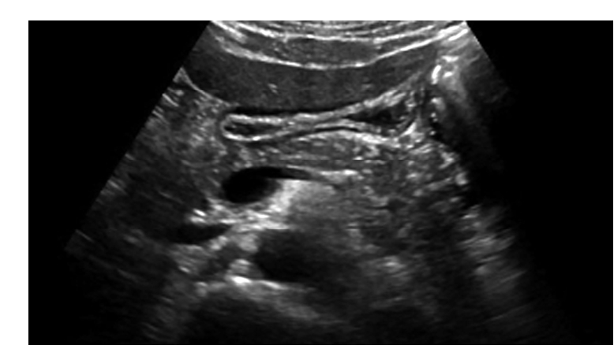
图3-11-1 胰腺横断面
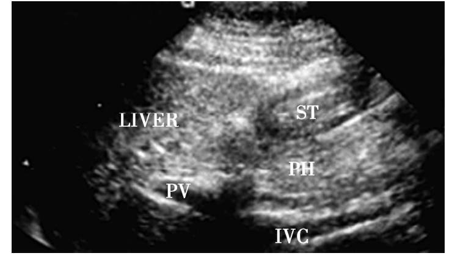
图3-11-2 经胰头矢状断面
应显示胰头短轴或矢状断面和下腔静脉PV:门静脉; IVC:下腔静脉; ST:胃; PH:胰头; LIVER:肝
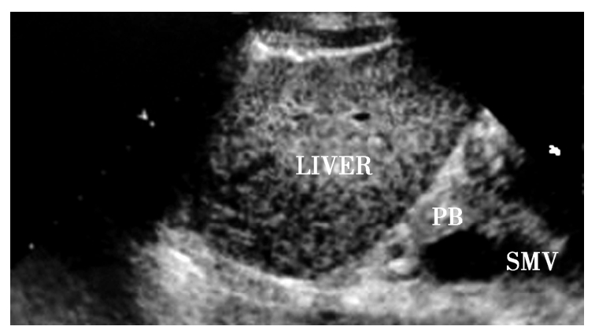
图3-11-3 经胰颈矢状断面
标志为肠系膜上静脉长轴，应显示胰颈短轴断面、肠系膜上静脉及其背侧的胰腺钩突部IVER:肝; PB:胰体; SMV:肠系膜上静脉
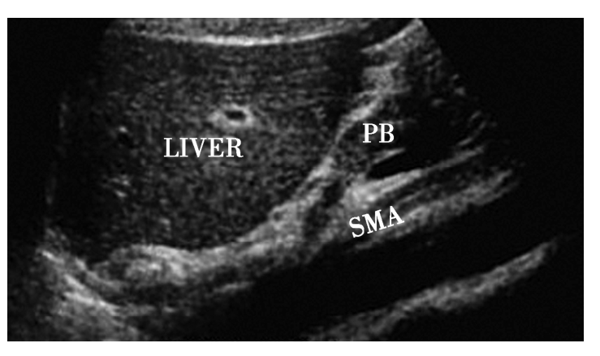
图3-11-4 经胰体矢状断面
标志为腹主动脉长轴，应显示胰体短轴断面、腹主动脉、肠系膜上动脉、腹腔动脉干及其分支LIVER:肝; PB:胰体; SMA:肠系膜上动脉
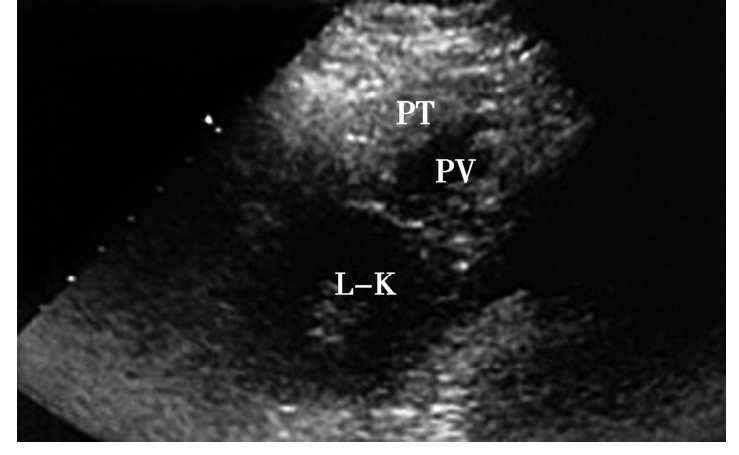
图3-11-5 经胰尾矢状断面
标志为脊柱左缘和左肾，应显示胃、胰尾、脾动脉、脾静脉和左肾，饮水后取坐位，易于识别PT:胰尾; PV:门静脉; L-K:左肾
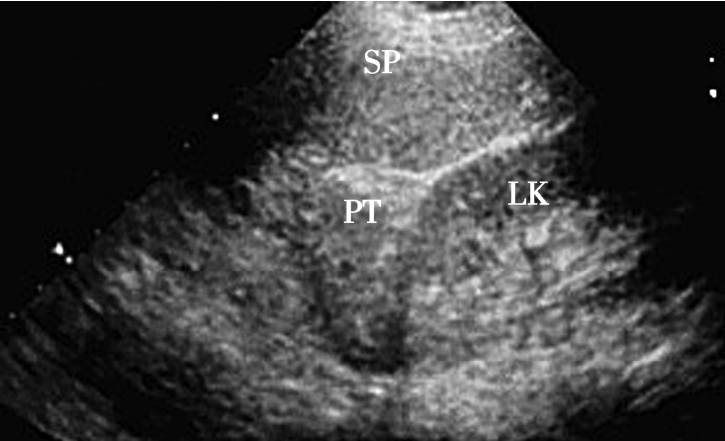
图3-11-6 左斜冠状断面
应重点显示脾门部血管及胰尾部，显示左肾上极等结构SP:脾脏; PT:胰尾; L-K:左肾
(四)正常胰腺声像图
超声横切面胰腺可分3种形态，即蝌蚪形(44%)、哑铃形(33%)、腊肠形(23%)，胰腺头、体、尾及胰管内径均在正常范围内，胰腺边界光滑、整齐，内部回声均匀，较肝脏回声稍强，肥胖者及老年人胰腺回声增高，胰管内腔平滑，周围血管丰富，但内部血管较少(图3-11-7)。
正常值:下腔静脉前方测量胰头＜2.5cm;腹主动脉前方测量胰体＜2.0cm;腹主动脉或脊柱左缘测量胰尾＜2.0cm。
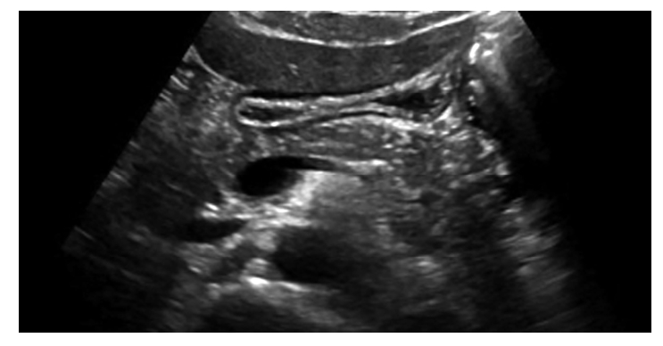
图3-11-7 胰腺正常声像图
【难点解析】
1.胰腺是超声检查最困难的腹腔脏器之一，重要标志是脾静脉。首先确定脾静脉的位置，然后再在其前上方寻找胰腺。
2.约1/4人的胰腺形态或位置有变异。应熟悉胰腺的各种形态和位置，对判断胰腺是否异常很重要。
3.横断面易将胃后壁的弱回声线误认为胰管，而将胃腔误认为胰管前方的胰腺组织，断面观察和饮水后检查有助于鉴别。
4.与胰头紧贴的肝尾叶容易误认为胰腺肿瘤，多切面扫查可判定肝尾叶与肝左叶背侧的连续关系。
5.后腹膜纤维化者声像图显示为近似胰腺的回声带，被误认为胰腺。纤维化常发生于胰腺下部，腹主动脉与肠系膜上动脉之间，脾静脉后方，不符合胰腺的解剖位置。
6.部分被检者胰头和钩突部的原始腹胰可能呈低回声，易误认为肿瘤，但多断面检查发现其为非球形结构。
7.注意胰头部有占位性病变的患者胆道系统、胰管受压、狭窄、闭塞或扩张的范围、程度。
8.超声对胰尾部和较小胰腺肿瘤的敏感性较差。
9.胰腺和周围肿瘤之间分界不清时超声定位不容易。
10.超声提示注意参考既往和近期检查资料。
第12节 胰 腺 炎
一、急性胰腺炎
(一)检查前准备
同正常。
(二)检查体位
同正常。
(三)扫查方法
同正常。
(四)急性胰腺炎声像图表现
1.水肿型急性胰腺炎(图3-12-1)
(1)胰腺弥漫性肿大，轮廓尚清晰。
(2)实质回声减低，甚至接近无回声。
(3)胰管多无扩张，可见胆系病变。
(4)上腹部肠道积气。
(5)肝肾隐窝或盆腔可有少量液性暗区。
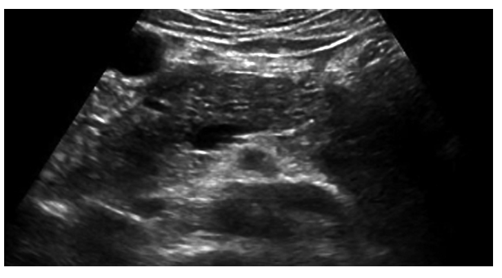
图3-12-1 水肿型急性胰腺炎，胰腺体积增大
2.出血坏死型急性胰腺炎(图3-12-2)
(1)胰腺肿大，轮廓不清晰，边缘不规则。
(2)实质回声减低伴不均匀强回声斑。
(3)周围组织层次结构模糊增强。
(4)胰腺局部积液或假囊肿形成。
(5)胸腹腔积液及肠道积气。
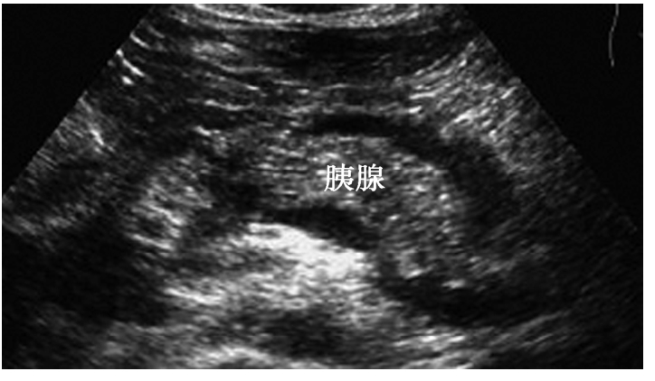
图3-12-2 出血坏死型急性胰腺炎，胰腺上方无回声区为周围渗出
【难点解析】
1.急性胰腺炎时不宜做胃饮水充盈下超声检查。
2.急性胰腺炎病情发展较快，必要时须以小时为单位进行超声监测。
3.早期急性胰腺炎的肿大程度和回声变化不明显。
4.胰腺炎时周围肠管积气将影响胰腺的超声显示。
5.患者剧烈腹痛、腹肌紧张等不适及探头加压检查也会影响胰腺的显像。
6.急性胰腺炎可累及整个腺体，也可发生局灶性炎症，局灶性胰腺炎与胰腺肿瘤的超声表现相似，结合临床病史有利于鉴别。
7.多普勒超声在评估胰腺炎的血管并发症时发挥重要作用，如急性胰腺炎长期反复发作可造成脾静脉受压，引起脾静脉和(或)门静脉血栓及相关后遗症。
二、慢性胰腺炎
(一)检查前准备
同正常。
(二)检查体位
同正常。
(三)扫查方法
同正常。
(四)慢性胰腺炎声像图表现
慢性胰腺炎声像图表现见图3-12-3。
1.约半数患者胰腺大小正常，其余表现为肿大型(整体轻度肿大、部分肿大或局限性肿大)和缩小型。
2.形态僵硬，边缘不平整，边界不清。
3.实质回声粗糙，可见钙化增强斑、点、条。
4.主胰管不规则扩张，内可有结石。
5.胰腺内或胰周可形成胰腺假性囊肿。
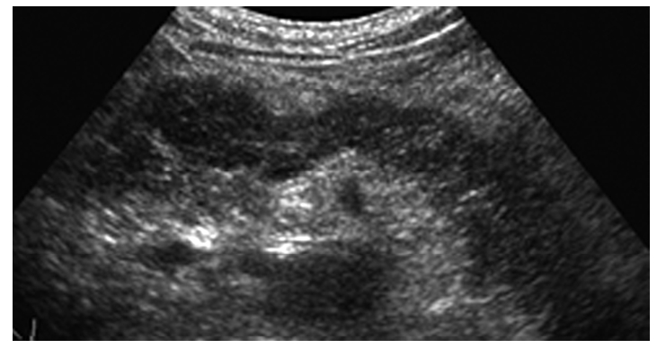
图3-12-3 慢性胰腺炎
【难点解析】
1.胰管扩张、胰腺结石和实质回声增粗、不均匀是典型慢性胰腺炎的表现。当部分慢性胰腺炎不完全具备这些表现，在图像无特异性时，应结合其他相关检查确诊。
2.部分胰腺肿大者注意与胰腺癌、胰腺囊腺瘤等鉴别。
第13节 胰 石 症
(一)检查前准备
同正常。
(二)检查体位
同正常。
(三)扫查方法
同正常。
(四)胰石症声像图表现
1.胰腺轻度肿大，回声增高、质地不均，边界不整。
2.胰管扩张，常呈串珠状、扭曲状或囊状，胰管内可见多个点状强回声，约2～3mm，后方常无声影。
3.胰腺实质内可见强回声，考虑为实质内钙化灶。
4.如同时发现胰腺局部肿大、回声减低、边界呈锯齿状，应考虑合并胰腺癌。
胰石症声像图表现见图3-13-1。
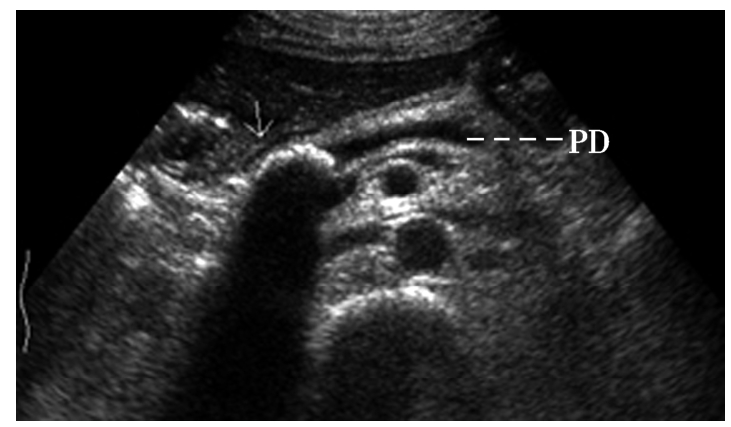
图3-13-1 胰石症，内可见一弧形强回声，后方伴声影
【难点解析】
慢性复发性胰腺炎是本病的病因，而本病又与胰腺癌有关。
第14节 胰腺囊性病变
一、胰腺囊肿
(一)检查前准备
同正常。
(二)检查体位
同正常。
(三)扫查方法
同正常。
(四)胰腺囊肿声像图表现
1.真性囊肿(图3-14-1)
(1)先天性囊肿:
胰腺导管或腺泡发育异常所致，多见于小儿，与遗传因素有关。囊肿较小，呈单房或多房，内为黄色液体。多伴多囊肝和多囊肾，两者并发时首先考虑先天性胰腺囊肿的诊断。
(2)潴留性囊肿:
常见的一种真性囊肿，由于胰腺炎症和胰管狭窄或阻塞，引起胰腺分泌液潴留形成。多单发，一般较小。超声显示为胰管膨大，呈无回声区，胰腺组织常有炎症改变，如边界不清、回声增强、体积增大(图3-14-2)。
(3)寄生虫性囊肿:
包虫囊肿常见，虽多发生于肝脏，也可发生于胰腺内。超声表现与肝包虫相似，囊肿壁回声增高，边界光滑、整齐，内为无回声，发现囊内子囊。
2.假性囊肿
约占胰腺囊肿的一半，多继发于急性或慢性胰腺炎或胰腺损伤，囊肿以单发多见，胰腺局部或附近见一无回声区，边界光滑、整齐，多呈圆形，亦可呈分叶状，后方回声增强，见侧方声影，囊肿巨大时可压迫周围器官、组织引起移位(图3-14-3)。
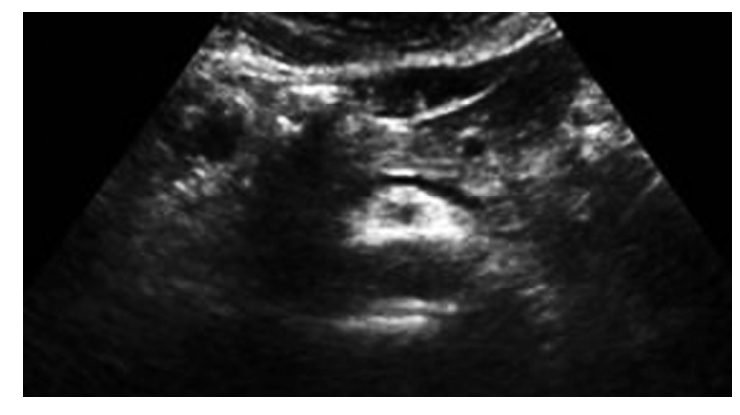
图3-14-1 胰腺真性囊肿
胰尾部可见一类圆形无回声区为胰腺囊肿
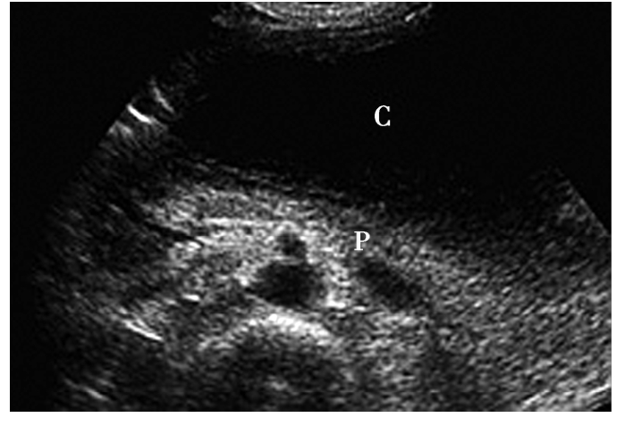
图3-14-2 胰腺假性囊肿
P:胰腺; C:囊肿
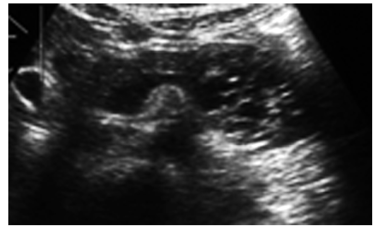
图3-14-3 黏液性囊腺瘤
【难点解析】
胰腺真性囊肿与假性囊肿的鉴别需结合病史，真性囊肿较小，不易引起症状，假性囊肿多见，常见于外伤、急性胰腺炎，由于胰液外渗，渗液与血液混合包裹而成。
二、胰腺脓肿
(一)检查前准备
同正常。
(二)检查体位
同正常。
(三)扫查方法
同正常。
(四)胰腺脓肿声像图表现
超声表现为胰腺增大、局限性囊性包块，囊壁较厚，暗区内部多伴细小回声，肿块轮廓不规则，偶可见气体回声。
【难点解析】
诊断应结合病史，胰腺脓肿是急性胰腺炎的严重并发症，多由于肠杆菌、金黄色葡萄球菌感染所致。
三、胰腺囊腺瘤
(一)检查前准备
同正常。
(二)检查体位
同正常。
(三)扫查方法
同正常。
(四)胰腺囊腺瘤声像图表现
1.浆液性囊腺瘤
蜂窝状的大量小囊结构，内回声偏强，后方回声增强，病变部分呈实性肿块，分隔成纤维，内未见血流信号。
2.黏液性囊腺瘤
多房样结构伴乳头状实性隆起，间隔厚薄不一，彩色血流显示在增厚的分隔或实性突起部位可见少量血流信号(见图3-14-3)。
【难点解析】
1.胰腺囊腺瘤与囊腺癌在临床与影像上表现非常相似，鉴别需要依靠病理检查。
2.胰腺囊腺瘤若发生乳头状增生，则有较高的恶变倾向。
第15节 胰腺肿瘤
一、胰腺癌
(一)检查前准备
同正常。
(二)检查体位
同正常。
(三)扫查方法
同正常。
(四)胰腺癌声像图表现
1.直接征象(图3-15-1)
(1)胰腺多局限性增大，少数弥漫性肿大。
(2)团块状、分叶状，边界不清，轮廓不规整。
(3)肿物回声不均匀减低，可有强回声斑和无回声区。
(4)后方多回声衰减。
(5)胰头癌胰管可扩张，呈截断样。
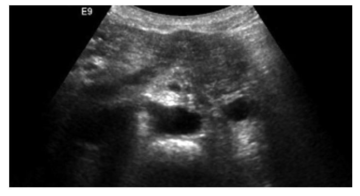
图3-15-1 胰腺癌
2.间接征象
(1)梗阻以上水平胆道扩张。
(2)可有腹腔腹膜后淋巴结转移及肝转移。
(3)下腔静脉、脾静脉、门脉、肠系膜上动脉受累。
(4)周围脏器浸润(胃后壁、十二指肠)及种植。
(5)可有腹腔积液。
【难点解析】
1.因胰腺癌常发生于胰头部，受前方十二指肠气体的遮挡，早期不易发现。
2.胰管过度扩张时，易与脾静脉混淆，扩张的胰管壁与平滑连续的脾静脉壁相比，显得更加不规则，彩色多普勒有助于两者的鉴别。
二、胰岛细胞瘤
(一)检查前准备
同正常。
(二)检查体位
同正常。
(三)扫查方法
同正常。
(四)胰岛细胞瘤声像图表现
1.胰岛素瘤(功能性胰岛细胞瘤)
多发生于成年人，90%属良性，80%为单发，多位于体尾部，肿瘤呈圆形，边界光滑、完整，内部为均质低回声区，血流信号丰富。
2.无功能性胰岛细胞瘤
左上腹巨大肿物，与胰体、尾相连，呈圆形或椭圆形，边界光滑、清楚，有时呈结节状;肿瘤较大时内部呈不均质，部分组织呈无回声，为囊性变;本肿瘤可恶变，肝内转移(图3-15-2)。
【难点解析】
1.因胰岛素瘤＞1cm时超声才易发现，故超声未发现肿瘤，并不能排除其存在。
2.诊断本病应与胰腺其他肿瘤性疾病鉴别，除声像图特征外，病史和实验室资料有重要的参考作用。
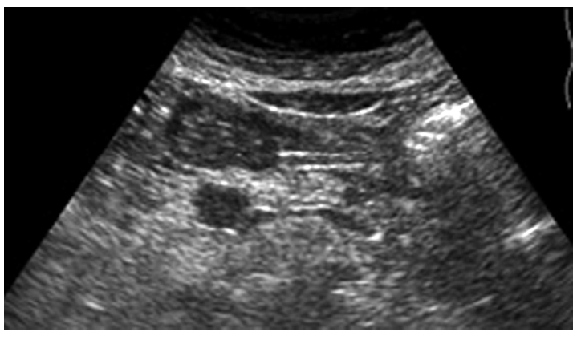
图3-15-2 胰岛细胞瘤
三、壶腹癌
(一)检查前准备
同正常。
(二)检查体位
同正常。
(三)扫查方法
同正常。
(四)壶腹癌声像图表现
1.胆道梗阻;肝内外胆管扩张，胆囊肿大。
2.胰管扩张，较胰头癌轻。
3.胆管壁增厚，其末端、胰头、下腔静脉区可见肿块。
4.肿块边界不清，内回声偏低。
壶腹癌声像图表现见图3-15-3。
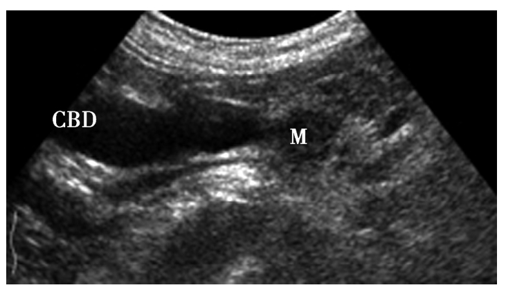
图3-15-3 壶腹癌
M:肿瘤; CBD:胆总管
【难点解析】
严重黄疸伴胆囊与胆道全程扩张，而胰头未发现明确病灶者，应考虑十二指肠壶腹部病变。
第16节 脾 脏
(一)检查前准备
一般无须特殊准备，不宜在饱餐后进行检查。必要时检查前禁食8小时，在检查过程中，为了进行左上腹肿物的鉴别诊断，可在空腹检查后饮水300～500ml再进行检查。
(二)检查体位
1.右侧卧位
方便。
2.仰卧位
适用于危重患者。
3.俯卧位
不常用，在其他体位难以显示脾脏的情况下使用。
(三)扫查方法
被检者取右侧卧位，于左侧第8～11肋间扫查:脾脏长轴断面;左侧腋中线至腋后线纵向扫查:冠状断面;声束自腋后线指向腹侧扫查:前倾冠状断面;左腋前至腋后线横向扫查:横断面。
被检者取仰卧位，于左肋缘下扫查，包括测量脾的厚径。声束向上倾斜，显示脾脏斜断面;向后扫查，显示脾脏与胃、胰腺尾部、肾上腺、肾上极的关系。
1.标准切面
肋间斜断面(脾长轴断面)、脾冠状断面、前倾冠状面是脾脏超声检查的常规断面。在此基础上辅以其他断面。
2.左肋间斜断面
可显示脾长轴断面。典型呈半月形，应显示脾实质、脾门及脾门血管(此断面与前倾冠状断面相似)，注意脾脏与左横膈、胃、胰尾、肾上腺、左肾上极的关系(图3-16-1)。
3.冠状断面
应显示脾的大部分实质、脾与左肾、胃、脊柱之间的关系(图3-16-2)。
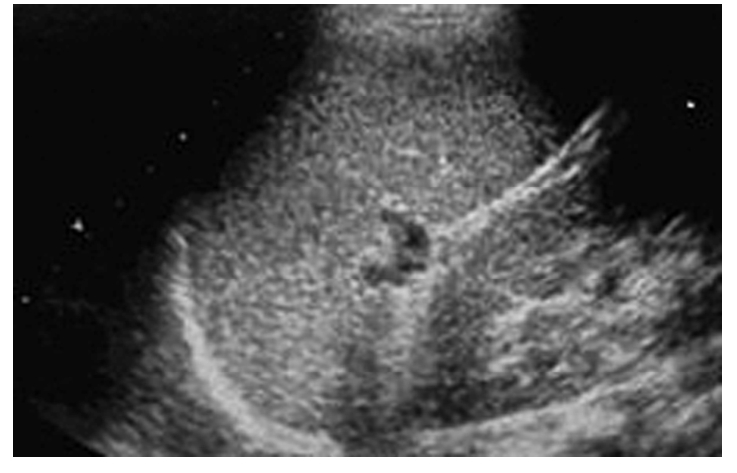
图3-16-1 脾脏冠状断面图
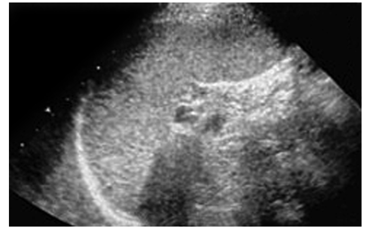
图3-16-2 左肋间斜断面
显示脾长轴断面，在此断面上测量脾脏长径及厚径
4.前倾冠状断面
应显示脾脏的脾门和脾血管并测量厚径。
5.横断面
可显示胰体、胰尾及其后方的脾静脉、脾门部的脾静脉、肾静脉、左肾上腺区。
(四)正常脾脏声像图表现
正常脾脏的位置在左上腹，在肾的上方，脾脏的纵断面呈半月形，边缘稍钝，膈面隆起，整齐而光滑，部分被肺气遮挡，脏面则明显凹陷，有特征性的脾门切迹和脾血管回声，这主要为脾静脉回声，脾动脉在脾门部的分支一般不易显示清楚;其声像图表现为回声强度稍低的均质性回声，比肝脏回声强度略低或相似;少数正常人的脾门附近可发现副脾，呈小圆形或椭圆形结节，属正常变异。脾脏的正常值:
1.脾厚径
通过左侧肋间斜断面显示脾长轴切面的脾门及脾静脉，测量脾门至脾膈面的间距，正常值＜4cm。
2.脾长径
通过左侧肋间扫查显示脾的最大长轴断面图像，测其上下端间距，正常值＜11cm。
3.脾宽径
垂直于脾长轴切面，测量其最大横径，正常值5～7cm。
【难点解析】
1.扫查脾脏应仔细全面，由于膈面常被肺遮挡，形成盲区，难以完全显示上部，应嘱被检者深度深呼吸，在此过程中获得脾脏最大声窗。
2.因胃及结肠内气体干扰，左上腹部肋缘下扫查很难有效显示脾区结构，饮水后或采用口服胃肠超声造影剂，取坐位或半卧位扫查，可充分显示脾脏及其邻近器官。
3.使用扇扫探头进行肋间扫查时，注意使图像的扇顶位于脾脏中部，而后做前倾、后倾、旋转扫查，以充分显示脾脏的各个部位，确保排除脾内和脾周病变。
第17节 脾脏疾病
一、弥漫性脾大
(一)检查前准备
同正常。
(二)检查体位
同正常。
(三)扫查方法
同正常。
(四)脾大的声像图表现
1.脾脏体积增大
脾长径＞11cm，厚径＞4cm，或脾指数＞20cm 2 ，增大明显时脾下极超过左肋缘下。
2.脾内回声
不同病因的脾大，脾内回声有一定的差异。
脾大的声像图表现见图3-17-1。
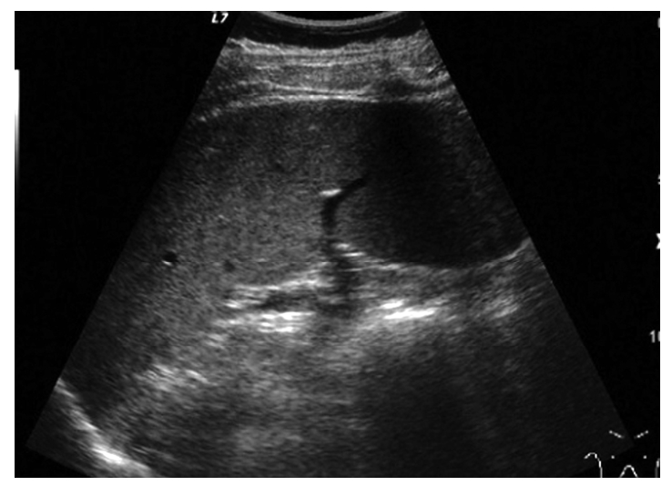
图3-17-1 脾大
【难点解析】
1.脾脏形态特殊，个体变异较大，加上解剖学位置深和有较多的扫查盲区，探头类型、扫查方法、断面选择、患者呼吸都可以影响其测值。必须使用标准断面测量，脾门和脾静脉是重要的超声解剖标志。
2.多种疾病均可导致脾肿大，包括:①感染性疾病;②寄生虫性疾病;③淤血性疾病;④血液病;⑤自身免疫性疾病;⑥先天性代谢性疾病。
二、脾囊肿
(一)检查前准备
同正常。
(二)检查体位
同正常。
(三)扫查方法
同正常。
(四)脾囊肿的声像图表现
1.单纯性脾囊肿
脾一般无明显增大，外形无改变，表面光滑，有时仅见局部隆起;脾实质内见圆形或椭圆形无回声区，其内偶见分隔，囊壁光滑清晰，后壁和后方实质回声增强(图3-17-2)。
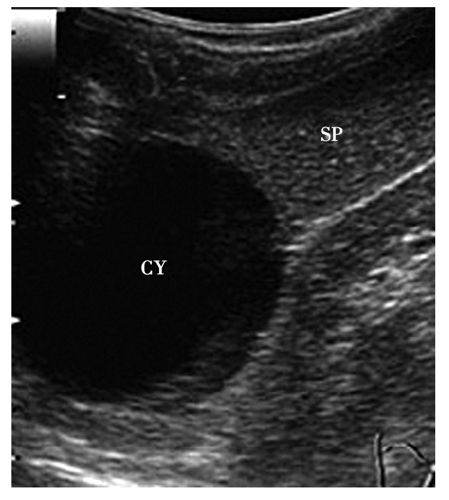
图3-17-2 单纯性脾囊肿
CY:囊肿; SP:脾脏
2.脾表皮样囊肿
囊肿一般较大，常导致脾体积增大及形态改变;囊肿形态近圆形，边界清晰，囊壁较光滑，囊内常为无回声或浮动的细点状低回声点;后壁和后方实质回声增强。
3.脾包虫囊肿
患者脾大，脾内为圆形或椭圆形无回声区，囊壁较厚，清晰光滑。囊壁可见“双边”结构，有特异性的诊断价值。与肝包虫病一样，可出现单囊型、多囊型、囊沙型、母子囊型。
4.脾假性囊肿
囊肿可位于脾实质内或包膜下，其内壁多不光滑，囊腔内可有分隔、低回声和分层沉淀现象。
【难点解析】
1.脾囊肿分为真性囊肿和假性囊肿，假性囊肿多由脾外伤后血肿演变形成或胰腺炎累及脾脏所致。
2.若发现的囊肿位于脾脏边缘，应注意鉴别是来源于脾脏的囊肿还是来源于周围器官的囊肿，如胰腺囊肿、左肾囊肿。
三、脾肿瘤
(一)检查前准备
同正常。
(二)检查体位
同正常。
(三)扫查方法
同正常。
(四)脾肿瘤的声像图表现
1.脾血管瘤
声像图表现和肝血管瘤类似，显示为边界清晰、边缘欠规则的增强回声区，其内回声分布稍欠均匀。病变区内可有圆点状、细短管状无回声区。当有大血窦时，可呈相应的无回声区。有少数呈低回声区。彩色多普勒超声探测病变内外仅见点状静脉血流(图3-17-3)。
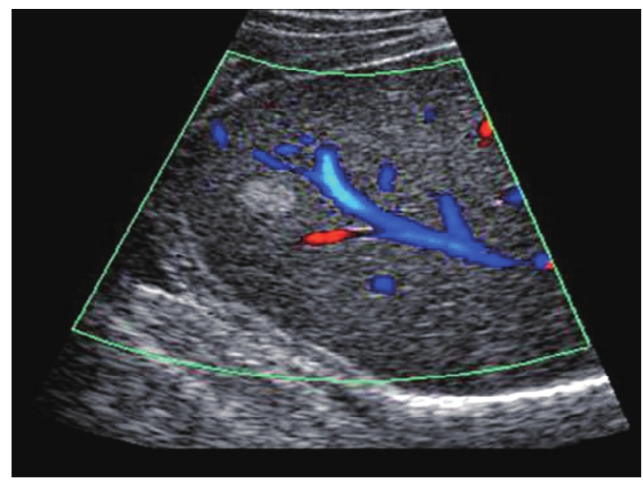
图3-17-3 脾血管瘤
脾内可见一椭圆形高回声区，内无血流信号，和肝血管瘤相似
2.脾淋巴管瘤
声像图表现为脾增大，内见由无数大小不等的具有菲薄光整囊壁的小无回声区构成的蜂窝样团块，瘤体后方回声增强。淋巴管瘤体积较大，缺乏张力，加压扫查常可见瘤体变形，应与海绵状血管瘤相鉴别。
3.脾淋巴瘤
脾常弥漫性肿大，其实质回声强度较正常脾低，呈分布较均匀的粗大点状回声;当脾内出现局限性病灶时，则可见单个或多个类圆形低回声或无回声区，边界清楚、边缘整齐，后方回声无明显增强;如为多发性结节状者，则呈蜂窝状无回声或低回声，其间有多条线状回声间隔，边缘为分叶状;有的以囊性改变为主，内部为多发囊状无回声区，后方回声稍增强(图3-17-4)。
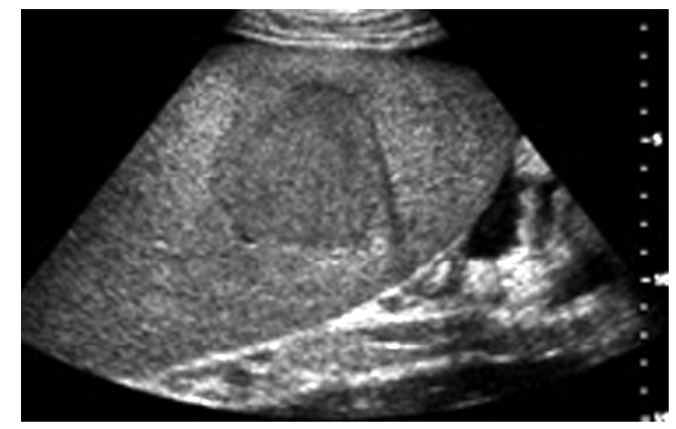
图3-17-4 脾淋巴瘤
4.脾转移癌
极少见，肿块回声无特征性，可为低回声、中高回声或者囊实性混合回声。
【难点解析】
1.脾肿瘤常缺乏特异性超声诊断。
2.对怀疑为转移性脾肿瘤者，应根据临床表现进一步行其他检查以寻找原发病灶。
3.虽然彩色多普勒血流成像能显示脾肿瘤的血供情况，但目前对脾肿瘤的诊断仍依赖于二维超声。
四、脾外伤
(一)检查前准备
同正常。
(二)检查体位
同正常。
(三)扫查方法
同正常。
(四)脾外伤的声像图表现
脾破裂通常有明显的外伤史，自发性破裂相当少见;脾破裂的声像图表现取决于病理改变，包括脾破裂的类型和病期。
1.中央型脾破裂
脾实质回声异常，内可见片状、团块状强弱不等的回声(提示血肿)(图3-17-5)。
2.包膜下脾破裂
脾包膜下方梭形、不规则形无回声或低回声区，回声增高时提示血肿机化(图3-17-6)。
3.真性脾破裂
脾脏周围积液、脾包膜连续性中断、腹腔游离积液(图3-17-7)。
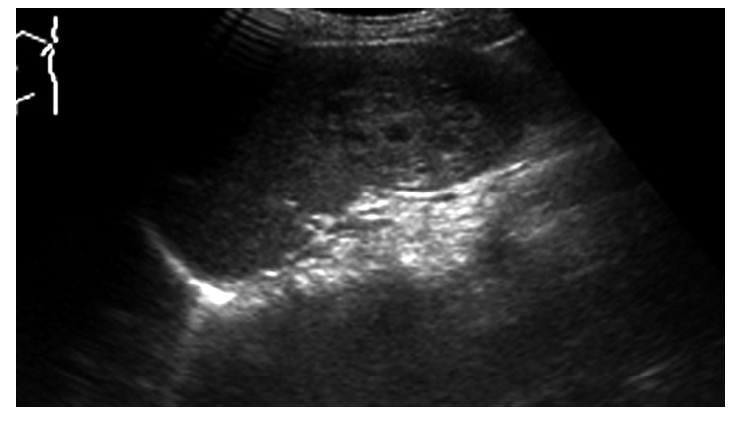
图3-17-5 中央型脾破裂
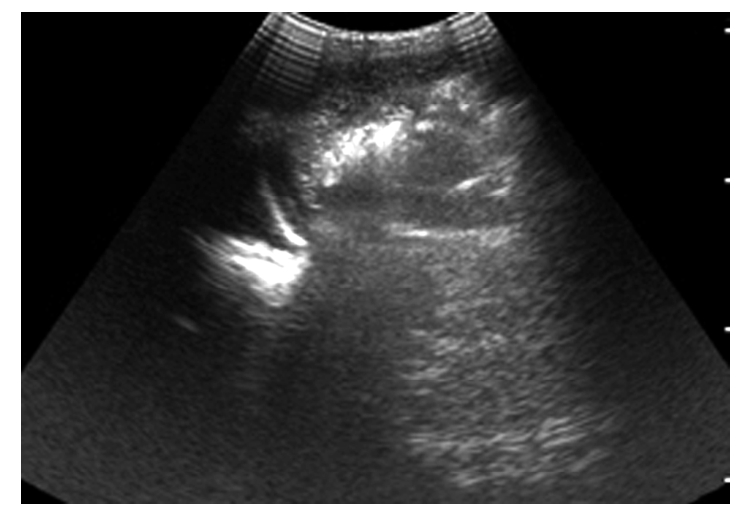
图3-17-6 包膜下脾破裂
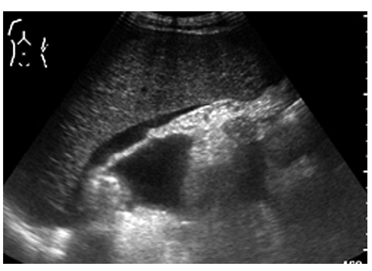
图3-17-7 真性脾破裂
【难点解析】
脾外伤必须密切结合临床资料，必要时进行动态观察，定期随访，对左侧腹部外伤患者应特别注意。
五、脾梗死
(一)检查前准备
同正常。
(二)检查体位
同正常。
(三)扫查方法
同正常。
(四)脾梗死的声像图表现
脾梗死的声像图表现见图3-17-8。
1.脾大 好发于淤血性脾大、原发性血小板减少症和慢性白血病患者。
2.急性期脾梗死，病变实质内单发者，脾实质内出现底部宽、朝向包膜的楔形回声减低区。病变实质多发者，其病变范围广，脾周围出现大片低回声区，其内有蜂窝状、短线状纹理，形态欠规则。当发生组织液化坏死时，可形成假性囊肿。
3.彩色多普勒超声有助于显示脾实质内缺乏血流灌注的梗死区及其形态特征，从而有助于本病的诊断。
4.陈旧性脾梗死病灶常因纤维化、瘢痕化及钙化而出现不同程度的高回声、强回声表现，病变体积反而趋于缩小。
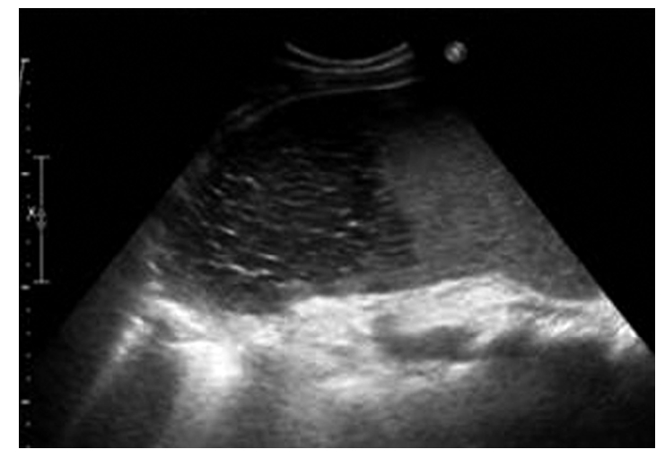
图3-17-8 急性期脾梗塞
【难点解析】
1.典型的脾梗死声像图表现不多见，检查时需要注意超声应多个切面扫查。
2.对于接受导管术和有栓塞病史的患者，需要提高警惕。
3.与脾脓肿和脾肿瘤鉴别，利用彩色多普勒超声检查有很大帮助，诊断困难者可借助于CT增强扫描。
六、脾结核
(一)检查前准备
同正常。
(二)检查体位
同正常。
(三)扫查方法
同正常。
(四)脾结核的声像图表现
1.轻度脾大。
2.急性粟粒性结核 脾实质内散在分布的微小结节，直径2～5mm，治愈后呈点状强回声，代表钙化影(图3-17-9)。
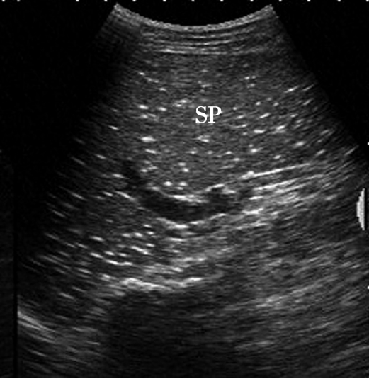
图3-17-9 脾结核急性粟粒性结核
3.局灶性脾结核 通常呈单发或多个低回声结节，有时酷似肿瘤，其中可伴有小片无回声区(代表结核性脓肿液化坏死)和斑点状、斑块状强回声，后者常伴有声影(代表钙化灶)。
【难点解析】
注意结合结核病史及临床体征。
第18节 肾 脏
(一)检查前准备
肾脏检查一般不需特殊准备，探查肾血管时需空腹。探查肾盂、输尿管下段结石时需适度充盈膀胱。
(二)检查体位
1.侧卧位
左侧卧位检查右肾，被检者右手抬举至头部;右侧卧位检查左肾，被检者右左手抬举至头部。
2.仰卧位
被检者双手置于枕旁，此体位适合于右上腹右肋缘下经肝做右肾纵断和系列横断扫查(需呼吸运动配合)。
3.俯卧位
背部肌肉较厚或皮下脂肪较厚会影响肾脏图像质量。
(三)扫查方法
使用凸阵和扇扫探头，成人一般选用频率为3M～5MHz，儿童选用频率为5M～7MHz。
1.侧卧位经腰部扫查
在右(左)侧腰部利用肝脏为声窗，对右(左)肾进行纵断面和冠状面检查;然后自上而下和自下而上进行一系列横断面扫查。
2.仰卧位经前腹壁扫查
左上腹部因胃气干扰，在左肋缘下纵断或横断扫查观察左肾比较困难，必要时饮水400ml，或采用其他口服超声造影剂，使胃充盈，取坐位再查，对观察左肾极为有利。①肋缘下经肝纵向扫查;②右肋缘下斜行扫查:深吸气时经肝探测，易显示右肾静脉;③左腹部横向扫查:左侧腹部胰腺平面以下做横向扫查，可显示绕过腹主动脉前方的左肾静脉;④左腹部纵向扫查:在腹主动脉做纵向扫查，在肠系膜上动脉起始部的下方显示左肾静脉的横断面。
3.俯卧位经背部扫查
受肋骨影响少，容易获得整个肾脏图像;能显示肾积水上段输尿管。
扫查切面
1.扫查冠状切面 患者仰卧位或侧卧位，探头置于腋后线，纵向扫查，使声束指向内前方。以肝脏和脾脏为声窗，可分别获得右肾和左肾的最大冠状切面声像图。标准肾脏冠状切面呈外凸内凹的蚕豆形，此切面应显示肾门结构(图3-18-1)。
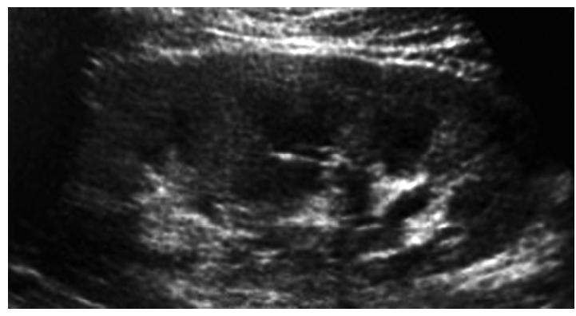
图3-18-1 冠状切面
2.扫查矢状切面 患者取仰卧位或俯卧位，探头置于腰背部或季肋角部纵向扫查，并使声束向上倾斜，获得肾脏矢状切面图。冠状和矢状切面可统称为肾脏长轴切面(图3-18-2)。
3.扫查横切面 在冠状扫查的位置，旋转探头90°，可获得肾脏的横切面声像图。标准肾门部横切面似马蹄形。此切面应显示肾门结构，并使显示的前后径(厚度)和宽径最小(图3-18-3)。
4.利用冠状切面和(或)横切面显示肾门部血管。使用彩色和脉冲多普勒诊断仪分别检测肾动脉、肾段动脉、叶间动脉的血流速度、阻力指数、加速时间。在上腹部横断扫查，检测肾动脉起始段的各种血流参数。
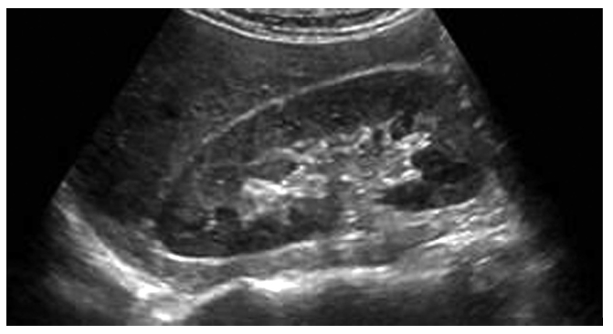
图3-18-2 矢状切面
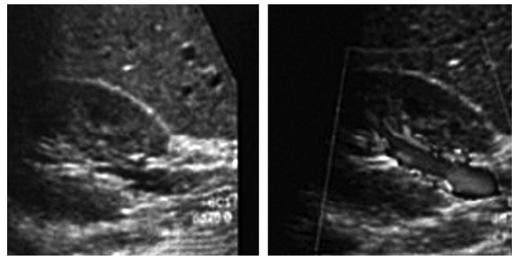
图3-18-3 横切面
(四)正常肾脏声像图表现
正常肾脏冠状切面呈一豆形，肾轮廓线明亮、光滑。肾皮质为细小均匀低回声光点，肾椎体为圆锥形，呈放射状排列弱回声区(青少年更易显示) (图3-18-4)。肾窦是肾盂、肾盏、血管和脂肪组织的综合回声，亦称集合系统，为密集增强回声。宽度占肾前后径的1/2～2/3。含尿液时，中央可出现暗区，直径＜1cm。正常肾脏长约10～12cm，宽约5～6cm，厚约3～4cm。
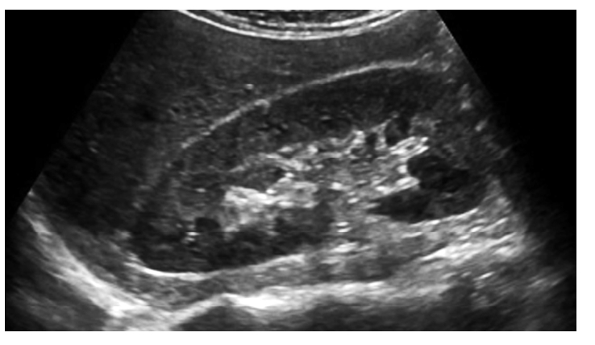
图3-18-4 正常肾脏声像图
【难点解析】
1.决定有无肾内局限性病变，必须从肾长轴断面(冠状、纵断)和短轴系列断面来观察，以免漏诊或误诊，对于肾的赘生性肿物(囊肿、肾癌等)尤应如此。
2.注意识别正常肾脏变异和伪像干扰，勿将正常肾脏表面的分叶状切迹和肥大肾柱误诊为肾肿瘤。
3.超声检查虽然对肾脏疾病的诊断和鉴别诊断有重要价值，但是尚存在许多局限性，甚至是“盲区”。超声诊断医师必须对各种疾病的超声检查价值和局限性有足够认识。超声检查“无异常”，不等于“无疾病”，更不能称正常。必要时建议进行其他检查。
4.对肾血管检查，仅在临床有特殊要求时进行。
第19节 肾脏疾病
一、肾积水
(一)检查前准备
同正常。
(二)检查体位
同正常。
(三)扫查方法
同正常。
(四)肾积水声像图表现
1.肾窦回声(集合系统)分离，其内出现无回声液性暗区，液性暗区可相互连通。
2.肾形增大 中度以上肾积水，有肾形增大。
3.重度肾积水时肾实质萎缩变薄。
肾积水声像图表现见图3-19-1。
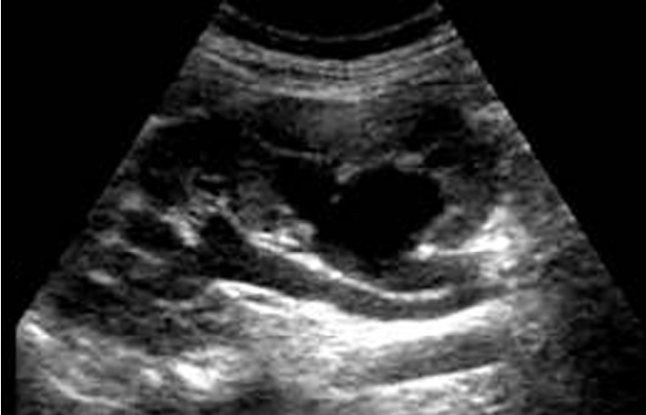
图3-19-1 肾积水
【难点解析】
1.注意鉴别生理性肾窦回声分离与病理性肾积水;排尿后肾窦分离消失，是生理性肾窦回声分离;妊娠期妇女常有双侧或单侧轻度肾窦回声分离，也是生理现象。
2.轻度肾积水的超声诊断必须慎重，需与正常肾外肾盂鉴别。
3.单侧肾积水的梗阻部位必然在上尿路。双侧肾积水的梗阻部位可在上尿路，也可在下尿路，包括前列腺。但是，肾积水和梗阻的病因诊断需结合其他影像检查。
4.超声不能根据肾实质变薄程度确定肾功能的有无。
5.有条件时，急性梗阻病例应检查肾内动脉阻力指数(RI)，患侧输尿管口尿流信号是否减弱或消失。
二、肾囊肿
(一)检查前准备
同正常。
(二)检查体位
同正常。
(三)扫查方法
同正常。
(四)肾囊肿声像图表现
1.肾切面形态失常，局部增大。
2.肾实质内可见单个或者多个无回声区，互不相通(圆形、椭圆形)。
3.囊肿壁菲薄，边缘光滑、整齐，后壁回声增强。
4.如较近肾窦处可使肾集合系统光点受压。
肾囊肿声像图表现见图3-19-2。
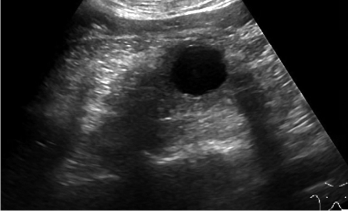
图3-19-2 肾囊肿
【难点解析】
1.由于囊肿可发生于多个脏器，当检查中发现囊性病变时，应判断其是否来源于肾脏周围器官，如位于左肾上极的囊肿应注意是否为脾囊肿;位于右肾上极的囊肿应注意是否为肝囊肿。
2.有的囊肿位置特殊而易漏诊，应嘱患者变动体位，配合呼吸，多切面仔细扫查，以免漏诊。
三、多囊肾
(一)检查前准备
同正常。
(二)检查体位
同正常。
(三)扫查方法
同正常。
(四)多囊肾声像图表现
1.双肾显著增大，表面极不规则。
2.肾实质内出现多个大小不等液性暗区，互不相通。
3.囊肿累及整个肾脏，声像图找不到正常肾肾实质回声，不是满布囊肿，就是回声增强。
4.常合并其他脏器多囊改变。
多囊肾声像图表现见图3-19-3。
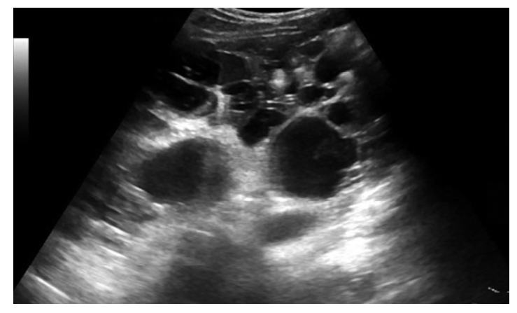
图3-19-3 多囊肾
肾形态失常，可见多个无回声区
【难点解析】
1.此病为家族遗产病，因询问患者家族史。
2.常合并多囊肝等其他脏器的多囊性疾病。本病出现症状越早，预后越差。
3.婴儿多囊肾超声检查常不能发现囊肿，仅表现为体积增大、肾实质回声增强、皮髓质结构不清。若有条件，采用彩色多普勒超声诊断仪充分放大观察，可见肾实质内多数扩张的不规则小管状结构。
4.成人多囊肾可能合并肾积水，但积水与囊腔常难以区别。
5.本病应与肾多囊性发育异常(见于婴幼儿，单侧居多)、多发性肾囊肿、巨大肾积水鉴别。
四、肾脏肿瘤
(一)检查前准备
同正常。
(二)检查体位
同正常。
(三)扫查方法
同正常。
(四)肾脏肿瘤声像图表现
1.肾错构瘤
①肾实质内见增强光团;②边界清晰、形态规则;③其后无声影(图3-19-4)。
2.肾细胞癌
①肾切面形态失常，表面有局部隆起，集合系统回声受压或缺损;②肾内出现占位性病灶，圆形或椭圆形或分叶状，边界清楚，大的肾癌边界欠清，其内部光点分布不均，回声强弱不一，以低回声最为常见，可合并钙化、出血、坏死;③转移:可累及肾静脉、下腔静脉，于相应管腔内出现癌栓，可转移至肾门淋巴结、膀胱(图3-19-5)。
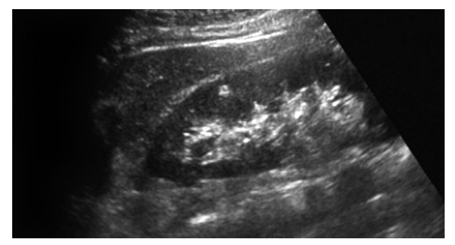
图3-19-4 肾错构瘤
3.肾母细胞瘤
见图3-19-6。
4.囊性肾癌
见图3-19-7。
5.肾盂肿瘤
见图3-19-8。
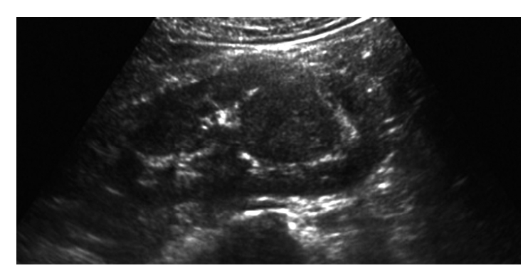
图3-19-5 肾细胞癌
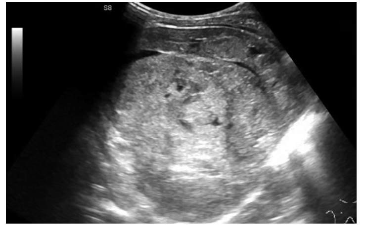
图3-19-6 肾母细胞瘤
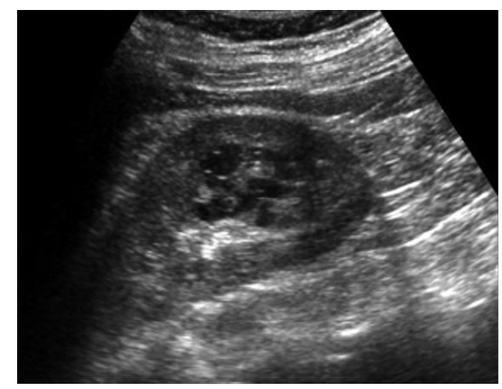
图3-19-7 囊性肾癌
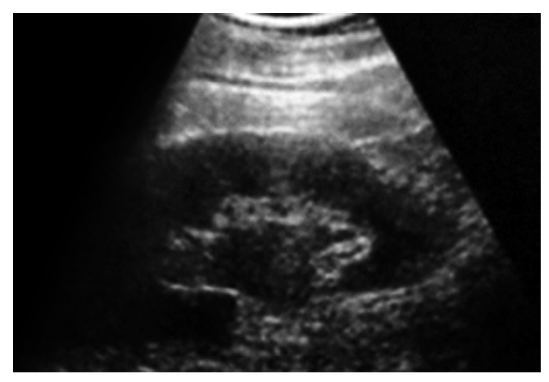
图3-19-8 肾盂肿瘤
【难点解析】
1.超声检查肾实质肿瘤主要包括肾细胞癌、肾错构瘤。
2.肾柱肥大、肾叶畸形和肾叶代偿性肥大容易被误认为肾细胞癌。
3.肾细胞癌在瘤体较小时可表现为高回声，与肾血管平滑肌脂肪瘤(错构瘤)较难鉴别。
4.少数肾细胞癌可呈不典型的囊性图像，容易误诊。故对于一个不典型肾囊性病变或明显复杂肾囊肿患者，必须再行CT或MRI等检查并且追踪其变化，以免轻易给出良性囊肿的结论而延误治疗。
5.有肉眼血尿的患者，要注意与肾盂内血块鉴别。待血尿停止后再复查超声。
6.肾盂小肿瘤或早中期非乳头状肿瘤很难被常规超声检查发现。
7.肾窦脂肪组织、坏死脱落的肾乳头、真菌团可能被误认为肿瘤，应注意鉴别。
8.超声检查肾实质性和肾盂肿瘤的价值有其局限性。超声检查肾肿瘤有阳性发现者对诊断有重要价值。但是检查阴性者并不能排除肿瘤，因为超声很难显示＜2cm的肾细胞癌或浸润生长的集合系统肿瘤。对于部分实质性肿瘤，超声检查难以确定其性质，超声导向下穿刺活检是明确诊断的重要途径。
五、肾结石
(一)检查前准备
同正常。
(二)检查体位
同正常。
(三)扫查方法
同正常。
(四)肾结石声像图表现
1.肾窦内出现回声增强的光斑、光团，可单发或多发。
2.光斑、光团后方伴声影或“彗星尾”征。
3.伴或不伴肾积水。
肾结石声像图表现见图3-19-9。
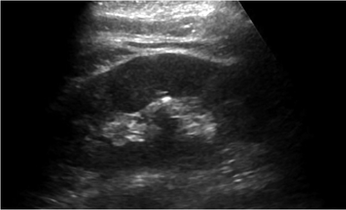
图3-19-9 肾结石
【难点解析】
1.较小肾结石可能仅显示点状强回声而无声影。此类结石多积聚于肾小盏的后部，若不伴有积水，容易被肾窦回声掩盖。
2.应注意与肾内钙化灶、肾动脉钙化、肾乳头坏死钙化等鉴别。肾产气菌感染引起的肾内气团也可能被诊断为肾结石。
3.超声检查肾结石病的价值有其局限性。超声对肾结石诊断的敏感性较高，但常规超声检查在判定结石空间位置方面不够精确，对数目很多且较大的结石和鹿角状结石超声常不能整体显示。
六、肾结核
(一)检查前准备
同正常。
(二)检查体位
同正常。
(三)扫查方法
同正常。
(四)肾结核声像图表现
1.肾盂、肾盏扩张型(积水型)。
2.肾内无回声型(结核脓肿型) (图3-19-10)。
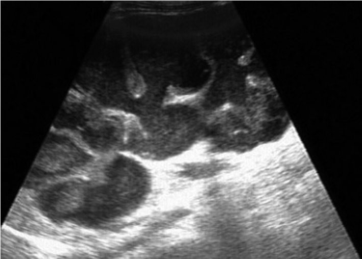
图3-19-10 肾结核
3.肾内混合回声型(干酪空洞型)。
4.强回声型(纤维钙化型)。
【难点解析】
1.肾结核声像图具有复杂性和多样性，具体取决于肾结核的病理改变及类型。
2.超声对早期肾结核的诊断阳性率不高，但在静脉注射肾盂造影(IVP)提示肾无功能的患者，超声探测有较大价值;晚期肾结核的冷脓肿伴积水和肾肿大时，超声有助于诊断。
3.注意询问病史，结合临床症状诊断。
七、肾外伤
(一)检查前准备
同正常。
(二)检查体位
同正常。
(三)扫查方法
同正常。
(四)肾外伤声像图表现
1.肾挫伤(Ⅰ型)。
2.肾实质裂伤(被膜破裂，Ⅱ型)。
3.肾盏撕裂伤(与肾实质病变并存，Ⅲ型)。
4.肾广泛性撕裂伤(复合型，Ⅳ型)。
肾外伤声像图表现见图3-19-11。
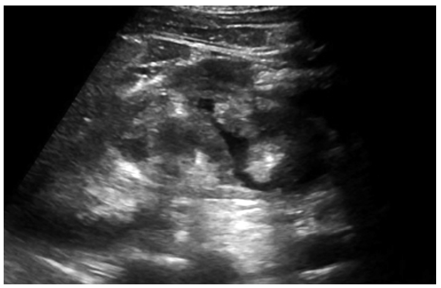
图3-19-11 肾外伤
左肾回声异常并包膜中断，结合外伤史考虑肾挫裂伤及肾破裂伤
【难点解析】
1.应常规探测对侧肾脏有无损伤。
2.声像图正常者不能排除轻度肾损伤，在有血尿的情况下尤其如此。注意膀胱内有无凝血块和异常回声，可间接提示肾损伤。
3.注意是否合并其他内脏损伤，如肝、脾破裂和腹腔积血。
八、肾先天性异常
(一)检查前准备
同正常。
(二)检查体位
同正常。
(三)扫查方法
同正常。
(四)声像图表现
1.肾缺如。
2.肾发育不全 见图3-19-12。
3.异位肾 见图3-19-13。
4.马蹄肾 见图3-19-14。
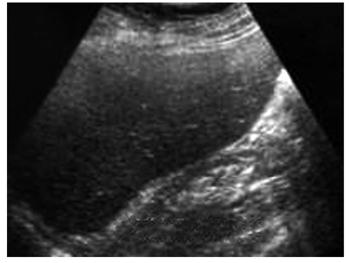
图3-19-12 先天性肾发育不全
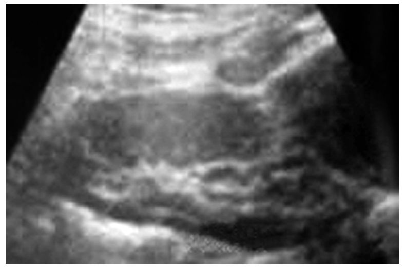
图3-19-13 异位肾
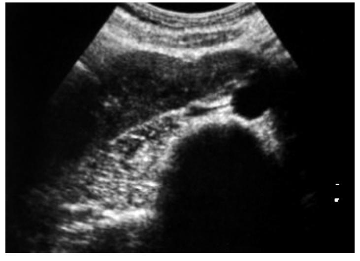
图3-19-14 马蹄肾
【难点解析】
1.肾缺如需要鉴别的疾病为萎缩肾。
2.若检查未探及正常肾脏，对可能出现异位肾和游走肾的部位进行探测，包括腹腔和盆腔。
3.异位肾需要X线尿路造影进一步证实诊断。
4.马蹄肾检查重点为肾脏的形态及其相互关系;输尿管开口位置。
5.超声诊断马蹄肾必须具有以下3种征象 ①双肾实质是否在同一侧或在中线附近;②有各自独立、相互分离的集合系统回声和两条输尿管;③无第三个肾脏存在。
九、肾移植及其并发症
(一)检查前准备
同正常。
(二)检查体位
同正常。
(三)扫查方法
根据移植肾部位进行探查。
(四)声像图表现
1.正常移植肾声像图表现(图3-19-15、图3-19-16)
(1)二维:较正常非移植肾稍大;因位置表浅，皮髓质分界、实质与窦区分界更清;窦区饱满，可轻度分离。
(2)彩色多普勒:与正常非移植肾表现相同。
(3)频谱多普勒:与正常非移植肾表现相同(肾动脉RI约0.63±0.08，PI约1.23± 0.39)。
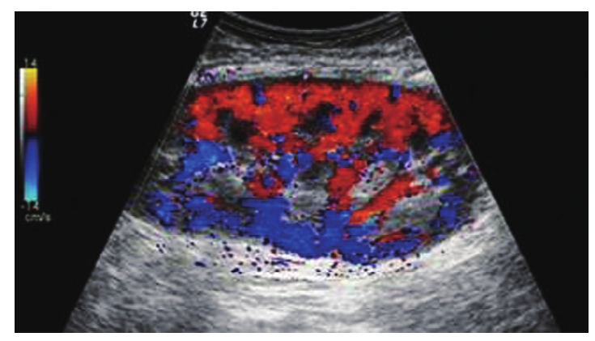
图3-19-15 正常移植肾
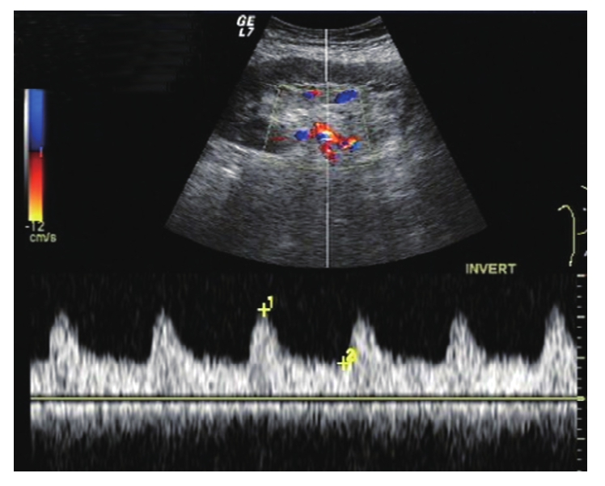
图3-19-16 正常移植肾肾门断面频谱
2.移植肾常见并发症
(1)急性肾排异:
肾脏增大，以厚径为甚，横切面呈球形;锥体增大，回声降低;皮质回声增强;窦区缩小，可见肿大锥体产生的压迹;肾彩色血流信号明显减少;肾动脉阻力指数增高(RI =0.81±0.18)。
(2)慢性肾排异:
肾脏渐进性增大，后来反而缩小;肾锥体回声降低，肾皮质回声增强或降低;肾结构紊乱，皮髓质分界不清，实质与窦区分界模糊;肾血流信号轻度减少;肾动脉阻力指数增高或正常。
(3)肾积水:
主要由输尿管阻塞引起，超声显示肾盂、肾盏扩张。
(4)肾周积液:
包括血肿、感染性血肿、脓肿、尿液囊肿、淋巴囊肿，超声见肾周包绕无回声区或低回声区。
3.移植肾血管病变
包括移植肾血管吻合口狭窄或栓塞、移植肾穿刺后动静脉瘘、假性动脉瘤、肾静脉血栓等。
【难点解析】
1.检查重点是发现有无移植肾并发症，如肾积水、肾周积液(积脓、血肿)、肾排斥和肾血管异常。
2.吻合口附近的移植血管常明显弯曲，容易误认为狭窄。在术后早期，因为有伤口、软组织水肿、肠管气体和移植肾周围软组织内夹杂的气体干扰，吻合口部有时难以显示。
3.移植早期轻度肾盂扩张不能直接说明存在尿路梗阻。
4.超声检查对急性排异的判断必须结合临床症状和实验室检查结果，不宜单独使用。
5.移植肾超声鉴别诊断存在困难时，超声导向肾活检有助于组织学鉴别。
第20节 输 尿 管
(一)检查前准备
宜在晨间空腹检查，以排除肠气干扰。必要时，前一日禁食产气食物，服缓泻剂、消胀片等。检查前大量饮水，适当充盈膀胱。必要时，饮水后口服或肌内注射呋塞米(速尿) 15～20分钟后检查。
(二)检查体位
1.侧卧位
肾脏冠状面显示肾盂输尿管衔接部与输尿管上段。
2.仰卧位
纵断观察输尿管全程;辅以横断扫查，从两个不同的方向确定有无结石等病变。
3.俯卧位
重点观察肾盂输尿管上段至髂嵴，可作为侧卧位的重要补充。
(三)扫查方法
1.受检者侧卧位冠状扫查输尿管长轴切面，以肾门或积水的肾盂为标志，显示肾盂输尿管连接部，然后沿长轴追踪扫查，逐段显示输尿管。也可取仰卧位，分别在下腔静脉或腹主动脉外侧1～2cm处纵向扫查，寻找扩张的腹段输尿管，向下追踪盆部输尿管。
2.以膀胱为声窗，在膀胱三角区显示输尿管膀胱壁段及两侧输尿管口。向上逆行追踪检查盆段输尿管。有条件时，使用彩色多普勒辨认输尿管出口并观察和对比双侧输尿管喷尿。
3.受检者取仰卧位，以髂总动脉末端及骼外动脉为标志加压倾斜扫查，在髂总动脉前方寻找到输尿管后，调整探头方向，显示输尿管第二狭窄部。若充盈的膀胱影响检查，可先检查输尿管盆段和膀胱壁段，排空膀胱后再检查第二狭窄部。
4.俯卧位经背部扫查，显示积水的肾盂后，向下追踪探测到肾盂输尿管连接部和上段输尿管，直到受髂骨声影影响为止。在经腹部显示输尿管困难时，此切面作为补充，不必常规扫查。
标准断面:
1.肾脏冠状断面
显示肾盂输尿管连接部。
2.输尿管横断面
主要用于辅助显示病变部位和输尿管在膀胱的开口部位。
3.沿输尿管长轴的纵断面
显示扩张的输尿管及其远端的病变部、膀胱输尿管连接部(膀胱壁内段)。
(四)正常声像图表现
1.正常输尿管
正常输尿管各部的管径粗细不同，一般处于闭合状态，超声检查常难以显示。在大量饮水输尿管处于充盈状态时，管腔内径可达2～4mm。利用充盈的膀胱做声窗，常可显示输尿管的膀胱壁内段。
2.输尿管扩张、输尿管结石
沿输尿管走行的管状无回声结构，沿扩张的输尿管下行，可能发现梗阻的部位或病因。输尿管结石表现为扩张的输尿管腔内强回声团，其后伴有声影，结石近段输尿管扩张，多伴同侧肾积水(图3-20-1)。
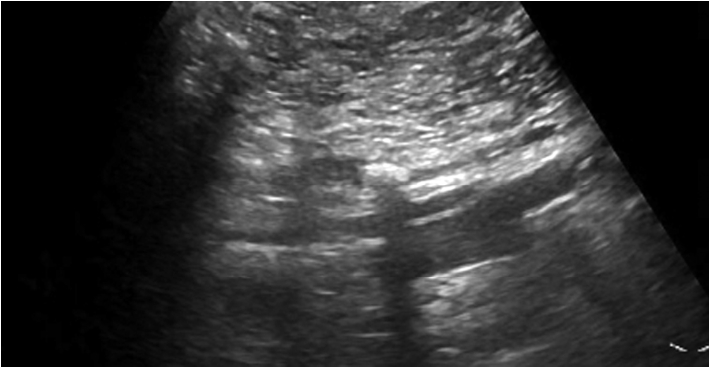
图3-20-1 输尿管腹段结石
输尿管扩张，其内可见一椭圆形强回声，后方伴声影
3.输尿管囊肿
于膀胱三角区可见圆形无回声区，囊壁纤细，好像“膀胱内囊肿”，可单侧或双侧发生，其大小随排尿而改变，囊肿内可合并结石; CDFI:喷尿沿囊肿内壁呈弧形走行(图3-20-2)。
4.先天性巨输尿管
超声显示巨大而壁薄的输尿管迂曲走行，内径约3～5cm以上;可合并输尿管结石及肾盂积水;如扩张的输尿管内显示低回声或沉淀样物，应考虑感染或出血可能(图3-20-3)。
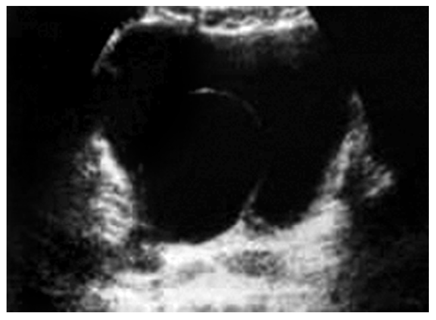
图3-20-2 输尿管囊肿
膀胱三角区可见圆形无回声区，囊壁纤细
图3-20-3 先天性巨输尿管
【难点解析】
1.最易显示的部位为肾盂输尿管连接部和膀胱壁段(即第一和第三狭窄部)。通常首先依次检查该两处输尿管，若能确定病变所在，可不必常规检查第二狭窄部。
2.尽可能找到输尿管开口的位置(膀胱壁段)，观察开口处有无结石或肿物等异常回声。
3.使用彩色多普勒观察输尿管口的尿流信号，也可利用彩色快闪伪像发现微小结石。
4.输尿管囊肿可合并其他尿路畸形，如双输尿管、异位开口等。
5.输尿管囊肿需要与输尿管脱垂和输尿管憩室鉴别。前者顶部呈脐样凹陷，无囊肿特征。后者多发生在输尿管与膀胱的交界处，特点是不突入膀胱腔，位于膀胱之外与输尿管连通。
6.不伴输尿管扩张的中上段小结石，尤其是在非急性疼痛发作期，声像图很难显示，需进行腹部X线平片或其他检查。临床有典型输尿管结石表现，即使声像图正常者，也不能排除输尿管结石。
7.部分透声较好的结石可以不伴声影，并注意与肿瘤鉴别。
8.膀胱彩色多普勒检查观察输尿管尿流减弱显著者和伴有快闪伪像者提示结石可能性大。
第21节 膀 胱
(一)检查前准备
经腹和经直肠扫查需要适度充盈膀胱。嘱被检者憋尿，或检查前40分钟饮水500ml左右，直至有尿意，必要时可通过导尿管向膀胱内注入无菌生理盐水250～400ml。
(二)检查体位
经腹部扫查常采用仰卧位，充分暴露下腹部至耻骨联合。经直肠扫查采用侧卧位，暴露臀部和肛门区。经尿道检查(很少用)采用截石位。
(三)扫查方法
耻骨联合上方涂抹耦合剂，首先进行正中纵断扫查:在清晰显示膀胱及“V”形的尿道内口后，将探头分别向左右两侧缓慢移动，做正中旁系列纵断扫查，直至膀胱图像消失。然后进行系列横断扫查:先朝足侧扫查膀胱颈部及三角区，随后将探头向上滑动直至膀胱顶部。
标准断面
1.纵断面
取自腹正中线。正中旁断面及病变处相应纵断面(图3-21-1)。
2.横断面
自耻骨联合上缘向上，取不同水平的横断面，包括病变处的横断面(图3-21-2)。
图3-21-1 膀胱纵断面
图3-21-2 膀胱横断面
(四)正常膀胱及膀胱疾病声像图表现
1.正常膀胱
适度充盈的膀胱，壁光滑，呈曲度自然的线状回声带，厚约2～3mm;腔内为无回声，透声好;排尿后膀胱内无回声区应基本消失。正常成人膀胱容量平均约400ml，残余尿量＜10ml (图3-21-3)。
2.膀胱癌
膀胱壁上可见向腔内突起的赘生物，光团内回声不一，形态多样，不规则，除内部出血、坏死外，多为实质组织回声结构，光团后不伴声影，可有回声衰减，如侵蚀膀胱壁可见壁的连续缺损、中断，可进行分期(图3-21-4)。
图3-21-3 正常膀胱
图3-21-4 膀胱癌
膀胱壁上可见向腔内突起的赘生物，内可见少许血流信号
3.膀胱结石
膀胱内可见单个或多个强回声，后伴声影;改变体位可见结石向重力方向移动(“滚石征”) ;多不伴肾及输尿管积水(图3-21-5)。
图3-21-5 膀胱结石
ST:结石
4.膀胱炎
①急性膀胱炎;②慢性膀胱炎(图3-21-6) ;③膀胱结核;④腺性膀胱炎(慢性膀胱炎)。
5.膀胱憩室
膀胱壁外周可见紧靠膀胱的囊性无回声，多呈圆形或椭圆形;囊壁菲薄且光滑，与膀胱相通;膀胱充盈时增大，排尿后缩小;合并感染时，无回声区内可见点状回声漂浮;合并结石或肿瘤时，可见相应回声(图3-21-7)。
6.膀胱异物
因异物属性和形态不同，有很多变化，金属异物常呈强回声，但各种异物回声有其共同之处，就是随体位改变向重力方向移动。膀胱内血块的回声颇像膀胱肿瘤，但往往扁平而大，膀胱壁回声清晰完整，改变体位时血块回声随之飘动，容易与肿瘤鉴别(图3-21-8)。
图3-21-6 慢性膀胱炎
膀胱壁增厚，可见小房小梁样改变图
图3-21-7 膀胱憩室
D:憩室
图3-21-8 膀胱异物
【难点解析】
1.膀胱顶部、三角区、侧壁的小肿瘤可能显示不清。应尽可能多切面、多角度仔细扫查，以免遗漏。
2.位于底部的膀胱肿瘤容易与前列腺肿瘤混淆。必要时，可用经直肠前列腺超声检查来鉴别。
3.膀胱肿瘤的声像图是非特异性的，如少见的腺性膀胱炎可能出现类似肿瘤的表现。
4.表面尿盐沉积的膀胱肿瘤可能被误认为结石，而缝线结石又可能被误认为肿瘤，必须仔细鉴别。
5.对异物表面有尿盐沉积者应与结石鉴别。比重轻的木棒、蜡块等漂浮异物容易漏诊。
第22节 前 列 腺
(一)检查前准备
1.经腹壁超声扫查需事先多量饮水，适当充盈膀胱。
2.经直肠超声扫查，排便后检查，膀胱无须充盈。
(二)检查体位
1.经腹壁扫查者取仰卧位，暴露下腹部至耻骨联合。
2.经直肠扫查者取左侧卧位，两腿屈曲，暴露臀部和会阴部。
(三)扫查方法
1.经腹壁扫查，耻骨联合上缘纵切扫查(图3-22-1)及耻骨联合上缘横切扫查(图3-22-2)。
2.经直肠扫查，进行前列腺系列横切面、矢状切面以及双侧精囊切面扫查。
图3-22-1 纵切断面
图3-22-2 横切断面
(四)前列腺疾病声像图表现
1.正常前列腺
形态规则，包膜光滑，内腺呈中低水平回声，外腺呈稍高水平回声。横径约4cm，长径约3cm，前后径约2cm (图3-22-3)。
图3-22-3 正常前列腺
2.前列腺炎
(1)急性前列腺炎:
①前列腺呈弥漫性显著肿大，近似圆形;②实质回声普遍减弱而不均匀，可见散在分布的细小的低回声区，其后方回声稍增强，出现无回声区提示急性前列腺炎合并脓肿;③前列腺周边毛糙，但包膜尚完整、清晰;④彩超检查(经直肠)可见病变区或脓肿周围甚至整个前列腺内血供丰富;⑤急性前列腺炎继续加剧，可形成前列腺脓肿，表现为前列腺增大，内部可见液化呈低回声区，回声不均匀。
(2)慢性前列腺炎:
①前列腺大小正常或轻度增大，有时也会缩小，而且左右基本对称。②前列腺包膜完整，但不光滑。③内部回声呈弥漫性增强，不规则;实质内常可见散在强回声光点或聚集的光团，为合并钙化或结石。因注意与前列腺癌相区别。④对邻近器官组织无明显继发压迫或侵犯现象。
3.前列腺增生症
①外形:前列腺径线增大，前后径更显著，呈椭圆形或圆形。包膜完整、光滑。肿大的腺体引起膀胱颈部抬高变形，严重者向膀胱内凸起。②内腺瘤样增大，外腺萎缩，两者分界清晰。③内外腺比例失常:正常老年男性前列腺内腺平均宽度1.5cm，内腺宽度与全腺宽度比值为0.33左右。前列腺增生时，内外腺比例增大，内外腺比值测定方法比单纯前列腺径线大小测定更敏感。④内部回声:增大的内腺回声均匀减弱，少数回声增高或呈等回声。结节型增生，肿大的内腺中见多个圆形小结节。小结节可呈高回声或等回声，很少有弱回声。在小结节周围可见声晕。⑤良性前列腺增生常伴有前列腺结石，多数呈细点状或斑点状强回声，有时呈串链状排列，分布于内外腺交接处，可伴声影。⑥间接征象:重度良性前列腺增生可伴有膀胱排空障碍而引起残余尿、膀胱壁代偿性增厚和假憩室形成、双侧输尿管积水和肾积水。这些征象能提示尿道梗阻的程度，但并非良性前列腺增生诊断的必要条件(图3-22-4)。
4.前列腺癌
(1)早期前列腺癌:
通常为低回声结节，位于外腺区;少数呈等回声或非均质性回声增强。78%的结节边界模糊不清，较大的结节有包膜隆起。腺体基本上左右对称或轻度不对称，CDFI示病变局部血流信号增加，但并非特异性。
(2)进展期前列腺癌声像图:
①前列腺各径增大，前后径增加更突出，向膀胱突出;②轮廓外形，呈不规则隆起，包膜不完整，回声连续中断，两侧常不对称;③内部回声不均匀，可出现大小不等光点或低回声区，病变部位回声增强和减弱参差不齐，内外腺结构和境界不清;④邻近器官受累征象，如膀胱颈部回声不规则增厚、隆起;精囊周围和精囊本身回声异常，失去两侧对称性;⑤CDFI示病变区内血流信号增加(图3-22-5)。
图3-22-4 前列腺增生，内腺球形增大
图3-22-5 前列腺癌，前列腺内不规则低回声区
【难点解析】
1.腹超声检查前列腺的图像分辨力远不及经直肠检查法。如有腹壁厚、局部瘢痕、膀胱充盈不良等情况，常使前列腺检查不能满意进行。
2.经直肠前列腺检查时，探头和乳胶套表面应有耦合剂充分润滑。插入肛门时动作必须轻巧，避免疼痛。有外痔和肛裂的患者慎用。
3.前列腺增生向膀胱内突起的声像图表现，经腹壁超声有时酷似膀胱肿瘤，应注意鉴别。改用经直肠超声易于作出鉴别诊断。
4.对于经腹壁超声检查前列腺声像图模糊不清的患者，有条件者应改用经直肠超声检查，而经腹壁扫查很难区别良性前列腺增生或前列腺癌。
5.对于重度前列腺增生排尿困难者，应根据需要同时进行双肾输尿管检查。
6.因为等回声性肿物不易发现，前列腺癌检出的假阴性率高，故经直肠超声不作为前列腺癌的普查方法。
7.前列腺超声检查应系统全面，包括系列横断(斜冠状切面)、系列纵切面，观察精囊、膀胱壁以及直肠壁和周围组织，以利于分期。
8.前列腺癌声像图及彩色多普勒表现均非特异性。与慢性局限性炎症、结核、梗死灶等有时难以鉴别，确诊有赖于超声引导下的前列腺活检。
第23节 乳 腺
(一)检查前准备
检查前无须特殊准备，需充分暴露乳腺及腋窝部位。
(二)检查体位
体位一般取仰卧位，双手上举至头上，以充分暴露乳腺及腋窝等部位，检查乳腺外侧象限时可用半侧卧位。
(三)扫查方法
由于乳腺腺体范围较大，每位检查者应按固定程序进行扫查，以免遗漏。有以下两种方法供参考:
1.按顺时针或逆时针顺序，以乳头为中心向外行辐射状扫查。
2.按先横切后纵切的顺序，从上到下、从左到右逐一切面扫查。
总之，变换扫查位置时应与已扫查切面有部分重叠，每一次扫查都应达到乳腺周围脂肪组织为止。还应扫查双侧腋窝处是否有副乳组织，并做纵、横切面扫查。发现肿块后探头轻置于肿块表面，先确定肿块长轴断面，将探头从肿块一侧移向另一侧，逐一切面扫查，然后将探头旋转90°，同样方法做横切扫查。
标准切面
1.经乳腺腺体最厚的纵横断面
通常于乳腺外上象限获得，在此断面上测量乳腺厚度(图3-23-1)。
2.乳头下方主导管长轴切面
测乳头下方主导管宽度。
(四)乳腺疾病声像图表现
1.正常乳腺(图3-23-2)
不同时期乳腺结构有变化，基本结构:①皮肤层:强回声，厚约2～3mm;②皮下脂肪:低回声，边界不清，内有散在光点，其间有三角形光带(cooper)韧带;③腺体层:脂肪层的深面，有乳腺腺叶和导管，呈现中强回声带夹杂有中低回声，但排列及结构比较整齐，层次结构清晰;④库柏韧带:从皮下脂肪向乳腺内延伸直至后筋膜的强回声带;⑤乳腺后区域:脂肪、胸肌、肋软骨、肋骨、肋间肌，肋软骨常呈椭圆形低回声，勿误判为肿块。
2.乳腺增生
①单纯性增生(图3-23-3) :乳腺呈局限性扁平状增厚，边界不清，内部回声增强，不均匀，正常结构消失，并可伴导管轻度扩张。②腺型小叶增生:腺体增厚，回声不一。浅表层多呈低回声团块，可不规则;深层呈排列紊乱的增强的条索状回声，以乳腺外、下侧为主。③乳腺囊性增生:双侧乳房同时或先后肿大，内部结构杂乱，回声粗糙，可见多个大小不等(数毫米至2cm)的囊性病变(小叶囊性增生)，并可伴导管扩张的无回声条状与圆形暗区(蝌蚪征)，病程长者由于小叶间纤维增生，囊肿反而不明显，出现多个强回声灶。分布在整个乳房区。如果单侧增生，则应与乳癌鉴别。④男性乳腺增生:通常认为与睾丸功能不全或肝功能不良有关。男性乳腺发育，导管和间质增生，酷似乳腺单纯性增生声像图，可发生在单侧或双侧(正常＜3mm)。
图3-23-1 经乳腺腺体最厚的纵横断面
图3-23-2 乳腺基本结构层次
S:表皮层; C: Cooper韧带; F:脂肪; G:腺体组织; D:导管; RF:乳腺后脂肪; P:紧贴胸肌的回声线
3.乳腺囊肿
乳房区探及单个或多个边缘规整、边界清晰的无回声暗区，后伴增强效应，周边可见正常乳腺组织。CDFI:囊内无血流信号，周边仅有星点状血流信号(图3-23-4)。
图3-23-3 乳腺增生
图3-23-4 乳腺囊肿
乳腺内可见一椭圆形无回声区，声像图具囊肿特征
4.乳腺纤维瘤
肿块呈圆形或椭圆形;边缘光整，边界清晰，有完整包膜。活动度好;内部回声偏低而均匀或欠均匀，或伴有钙化点，肿瘤大或病程长者，内部出现强弱不等的回声或少许无回声;病灶后方回声多正常，少数增强;探头加压时有一定程度的压缩。CDFI:肿块内无明显血流信号，周边可见少许血流信号(图3-23-5)。
5.乳腺脓肿
乳腺局限增厚，边界不清，回声较杂乱和增强，其内可见扩张的导管;脓肿早期局部增厚，回声偏低，边缘不规则;脓肿形成后可见边缘非常不规则的低回声或无回声区。CDFI:急性炎症期局部血流明显增多，脓肿形成后脓腔内无血流信号，周边有丰富的血流信号。急性炎症未完全治愈，可转为慢性炎症，出现局限性增厚，回声增强而杂乱，或边界不清的团块，如果脓肿未完全吸收，可出现局灶性无回声区。慢性期血流不甚丰富(图3-23-6)。
图3-23-5 乳腺纤维瘤，乳腺内低回声结节
图3-23-6 乳腺脓肿
6.乳腺结核
超声图像无特异性，需结合病史(图3-23-7)。
7.导管内乳头状瘤
多位于乳晕区，表现为导管扩张伴管内实性回声，导管扩张积血表现为低回声，导管囊状扩张有等回声或弱回声实性成分，实性低回声肿块(图3-23-8)。
图3-23-7 乳腺结核
图3-23-8 导管内乳头状瘤
导管扩张，其内可见低回声
8.乳腺癌
超声难作出病理诊断，大致可作出良恶性判断。肿块边缘不规则，多呈蟹足样向外延伸，无清晰包膜，但与周边正常结构的界限清楚;肿块内部呈低回声，均匀或欠均匀，亦有呈等回声或偏高回声，后缘显示不清，后方衰减，大肿块内部有变性的无回声;肿块表面与表皮界限不清，或凹凸不平，肿块活动度差，较固定。向后可浸润后筋膜或胸大肌;同侧腋窝可能探及肿大的淋巴结。CDFI:肿块可见线状或条状血流信号，且动脉信号丰富，峰值速＞12cm/s，肿块周边亦可见较多的血流信号。多数学者认为血流信号多少和速度高低是鉴别良恶性肿块的重要指标(图3-23-9、图3-23-10)。
(1)乳头状导管癌:
常位于乳头的后方，中心导管内充满实质性低回声团块，管壁显示不清，肿块可向外浸润，边缘不规则。
(2)髓样癌:
多呈圆形，常位于乳房深部，肿块一般体积较大，可达40～60mm，边缘比较光整，界限清楚;内部回声偏低或中等回声，欠均匀或伴小的无回声区及散在不均的强回声点。
(3)乳腺硬癌:
瘤体一般较小，以内部回声低，后方衰减明显为特征，肿块边缘不规整，边界欠清。
(4)炎性乳癌:
乳腺局限性增厚、质硬，肿块边缘不规则，边界不清，与皮肤界限不清，皮肤及皮下组织亦增厚、模糊，内部回声不均。
图3-23-9 乳腺癌
边缘不规则，内可见点状强回声
图3-23-10 乳腺癌，肿块内可见
较丰富血流信号
9.乳腺导管扩张症(图3-23-11)
多于乳晕区，见乳腺导管扩张的管状无回声暗区，边缘不规则，境界不清，内径＞2～3mm。CDFI:病变区及周边见较丰富血流信号。
10.乳房整形术后填充物(图3-23-12)
乳腺组织后方见扁平囊性回声，边界清晰，如有破裂可边界不清，形态可规则，也可不规则。
图3-23-11 乳腺导管扩张症
图3-23-12 乳房整形术后填充物，乳腺后方的无回声区
11.副乳腺(图3-23-13)
腋窝区见弧形中等、高回声区或团块，与乳腺有一定距离。哺乳期时内部导管扩张。
12.男性乳腺增生(图3-23-14)
乳头区、乳头后方见乳腺组织回声，边界尚清，无包膜，内部回声不均匀。
图3-23-13 副乳腺，腋窝处腺体样组织
图3-23-14 男性乳腺增生
【难点解析】
1.检查乳腺时探头应轻置于皮肤上，不宜加压，以免改变肿块形态、位置等，特别是检查肿块内血流时，加压会影响小血管的显示。
2.检查乳腺腺体组织的同时，应观察前后脂肪层、库柏韧带(乳房悬韧带)等是否有病变，特别是周围脂肪伸入腺体层内会造成类似肿块的假象，应仔细加以鉴别。
第24节 涎 腺
(一)检查前准备
一般无须特殊准备。
(二)检查体位
仰卧位或侧卧位。
(三)扫查方法
检查腮腺时被检者仰卧位，头转向对侧，将探头轻置于耳垂前下方、下颌骨的上方，从上至下、从外向内依次进行横切及纵切扫查，并做两侧对比。检查颌下腺时需使颈部过伸，在下颌骨下方、中线两侧，从下向上横切扫查，并做两侧对比。颌下腺纵切扫查因体表扫查角度受限而使图像不够理想，故较少采用。
标准切面
1.腮腺
经过腮腺主导管长轴的横断面:在腮腺均匀回声内可见两条平行的线状强回声，即为主导管。在此断面上可测量腮腺厚度及导管宽度(图3-24-1)。
2.颌下腺
最大横断面:测量最大左右径及厚度(图3-24-2)。
图3-24-1 正常腮腺
(四)正常涎腺及涎腺疾病声像图表现
1.正常腮腺
内部光点细密、均匀;回声稍强或相似于甲状腺;深叶深面边界显示欠清;内可见与皮肤平行的强回声光带(病理表明该带状回声为叶间的纤维组织)。
2.慢性腮腺炎
见图3-24-3。
图3-24-2 正常颌下腺
图3-24-3 慢性腮腺炎
3.涎石病
①涎腺炎:可见有急、慢性炎症表现;②导管阻塞:腺体导管可有扩张;③结石:管内有强回声光团，后方伴声影(图3-24-4)。
4.腮腺囊肿
见图3-24-5。
图3-24-4 涎石病
腺体导管扩张，管内有强回声光团，后方伴声影
图3-24-5 腮腺囊肿
5.腮腺混合瘤
见图3-24-6。
6.腮腺黏液表皮样癌
见图3-24-7。
图3-24-6 腮腺混合瘤
图3-24-7 腮腺黏液表皮样癌
【难点解析】
1.由于腮腺、颌下腺的形态欠规则，且个体差异较大，因此超声测量径线绝对值意义不大，可以通过两侧对比观察来判断某一侧腺体体积的变化。
2.腮腺深部的病变位置较深，难以清晰显示，须降低探头频率或变换角度扫查。
3.腮腺浅表常可见肿大的淋巴结，凸向腮腺内，易与腮腺肿瘤混淆，可通过彩超显示淋巴门及淋巴结内树枝状血流加以鉴别。
第25节 甲状腺及甲状旁腺
(一)检查前准备
检查前一般无须特殊准备。
(二)检查体位
体位一般取仰卧位，肩部垫一枕头，头稍后仰，充分暴露颈前及侧方。如查颈侧方淋巴结时，可采取左侧或右侧卧位。
(三)扫查方法
1.右叶矢状切面(纵切面)测量上下径及前后径(图3-25-1)。
2.右叶横切面(峡部水平)测量右叶横径。
3.峡部横切面(包括左、右叶)测量峡部前后径(图3-25-2)。
4.左叶矢状切面(纵切面)测量上下径及前后径。
5.左叶横切面(峡部水平)测量左叶横径。
图3-25-1 右叶矢状切面(纵切面)
图3-25-2 峡部横切面
(四)正常甲状腺及甲状腺疾病声像图表现
1.正常甲状腺
见图3-25-3。
2.亚急性甲状腺炎(图3-25-4)
甲状腺肿大，肿大部位与压痛部位一致，甲状腺内可见散在的边界欠清的低回声区，随时间的推移，低回声区域会发生移动。CDFI:甲状腺内异常回声区，周边有较丰富的血流信号，内部血流信号仅少数较丰富或无血流信号。
图3-25-3 正常甲状腺
图3-25-4 亚急性甲状腺炎
3.慢性淋巴细胞性甲状腺炎(桥本甲状腺炎)
(图3-25-5)甲状腺弥漫性肿大，边界光滑、整齐，峡部增厚，甲状腺光点增粗，回声减低，分布不均，呈网格样改变，部分可见单个或多个低回声结节(0.5～1cm)，无包膜。CDFI:一般仅在病变处血流信号丰富，其余部分则无改变或略有增加。弥漫型桥本病的甲状腺内血流信号明显丰富，亦可呈“火海征”。
4.甲状腺腺瘤(图3-25-6)
甲状腺内呈圆形或椭圆形结节，边界清楚、光滑、完整，有包膜。滤泡状腺瘤常有囊性变，显示为无回声，但边界仍光滑、完整，后壁回声增强。腺瘤周围可见正常的甲状腺组织，在腺瘤与正常甲状腺的界面可出现“晕环征”
图3-25-5 桥本甲状腺炎
图3-25-6 甲状腺腺瘤
5.结节性甲状腺肿(图3-25-7)
甲状腺显示两侧叶增大、不对称、表面不光滑，呈多发大小不等的结节，后期结节布满于甲状腺内，不能显示正常的甲状腺结构，结节内部呈中低回声，无包膜，囊性变时可见无回声区。
图3-25-7 结节性甲状腺肿
6.原发性甲状腺功能亢进(图3-25-8、图3-25-9)
甲状腺呈弥漫性、均匀性增大，左右两侧对称，增大明显时内部回声正常或稍强，呈密集点状分布，当本病治疗后可发现有点状或条状中强回声。CDFI:甲状腺内小血管增多、扩张，彩色血流信号呈五彩缤纷，表现为特征性的“火海征”(inferno)。
图3-25-8 原发性甲状腺功能亢进，甲状腺肿大并弥漫性改变
图3-25-9 原发性甲状腺功能亢进，CDFI可见“火海征”
7.甲状腺癌(图3-25-10、图3-25-11)
甲状腺内低回声结节，边界不清，边缘不光滑，无包膜，结节内部可有多发微钙化。CDFI:肿瘤内部血流丰富，边缘信号缺乏，部分肿瘤边缘信号丰富，内部则无血流信号。
3-25-10甲状腺癌，内可见沙砾样钙化
图3-25-11 甲状腺癌，血流信号较丰富
8.甲状旁腺
正常的甲状旁腺超声较难探及，位于甲状腺后缘与颈前肌之间，气管外侧与颈总动脉内侧，黄豆大小。
9.甲状旁腺增生
腺体可呈椭圆形、梭形、不规则形，无包膜反射，内部呈等回声、低回声、稍强回声，均匀，无囊变。
10.甲状旁腺腺瘤(图3-25-12)
甲状腺后缘圆形、椭圆形、长方形、三角形、子弹形、泪珠形或不规则形低回声，包膜完整，边界清，内部为低回声，分布不均，可见囊变。
图3-25-12 甲状旁腺腺瘤
【难点解析】
1.若由于探头体积小，甲状腺长轴矢状断面通常难以在一幅图像上完整显示，需改成双幅图像进行上下拼接。
2.若有锥状叶存在，还需对锥状叶进行仔细扫查，并加做锥状叶长轴矢状断面及最大横断面。
3.如颈部发现淋巴结肿大时，应注意是否来自同侧甲状腺病变。
4.甲状腺峡部上方囊肿，应考虑甲状舌管囊肿，颈侧方囊肿应考虑来自鳃裂。
第26节 阴 囊
(一)检查前准备
将阴茎上提至前腹壁，用纸巾或衣物遮盖，嘱患者用手固定。阴囊睾丸过分下垂者，需用纸巾或治疗巾将阴囊适当托起。阴囊表面多加耦合剂，以保证皮肤与探头之间充分接触。
(二)检查体位
患者通常采用仰卧位，暴露下腹部和外阴部。检查阴囊或轻度精索静脉曲张时，可采用直立体位补充检查。
(三)扫查方法
1.横断扫查
自上而下地双侧比较检查。
2.纵断扫查
对阴囊左、右侧分别进行观察。应从阴囊根部开始扫查，必要时采用“触诊辅助法”。
标准断面
根据具体需要，观察、记录附睾和睾丸的纵断面、最大横断面，以及病变部位的若干断面。以灰阶声像图为主。然后辅以彩色和频谱多普勒检查。
(四)正常阴囊及阴囊疾病声像图表现
1.正常阴囊
见图3-26-1。
2.鞘膜积液
见图3-26-2。
图3-26-1 正常阴囊
图3-26-2 鞘膜积液
鞘膜腔内可见无回声，包绕睾丸
3.睾丸肿瘤
见图3-26-3。
4.睾丸及附睾炎症
见图3-26-4。
5.睾丸和附睾囊性肿物
见图3-26-5。
图3-26-3 睾丸肿瘤
图3-26-4 睾丸及附睾炎症
附睾明显肿大，回声不均匀
图3-26-5 附睾头囊肿
附睾头类圆形无回声区，具囊肿特征
6.睾丸附睾结核
见图3-26-6。
7.阴囊外伤(阴囊血肿)
见图3-26-7。
图3-26-6 睾丸附睾结核
图3-26-7 阴囊外伤(阴囊血肿)
8.睾丸扭转
见图3-26-8。
图3-26-8 睾丸扭转图
9.精索静脉曲张
见图3-26-9、图3-26-10。
图3-26-9 精索静脉曲张
精索静脉内径增宽，内可见反流信号
图3-26-10 精索静脉曲张，精索静脉内径增宽，内可见反流信号
10.隐睾
见图3-26-11、图3-26-12。
图3-26-11 隐睾
左侧阴囊内未探及正常睾丸回声
图3-26-12 隐睾
于左侧腹股沟区可探及睾丸回声
11.睾丸微石症
见图3-26-13。
【难点解析】
1.单纯性睾丸鞘膜积液为无回声，或有弥漫的细点状低回声。
2.积液内出现细线样或分隔状不规则回声，提示继发性鞘膜积液(既往可能有阴囊外伤史、泌尿生殖系感染史)。需排除附睾、睾丸肿瘤、炎症所致的继发性鞘膜积液，应仔细检查附睾与睾丸。
图3-26-13 睾丸微石症
睾丸内可见弥漫性分布的细小点状强回声
3.Valsalva动作有助于鉴别是否为交通性鞘膜积液或合并腹股沟疝。
4.正常成人约有8%以上可见鞘膜腔内少量液体，属生理现象。液体产生的无回声区主要位于附睾和睾丸上极，勿误诊为鞘膜积液。
5.早期睾丸肿瘤的瘤体直径可能小至数毫米。为除外睾丸肿瘤，应对睾丸长轴(纵切面、冠状切面)和短轴进行系列的切面检查。
6.彩色多普勒显示局部血流信号增加，有助于对肿瘤病变的诊断，但它并非是特异性的。慢性局限性睾丸炎和肉芽肿时血流信号也增多，两者可能很难鉴别。
7.左侧肿瘤应疑及左肾门部及主动脉旁有无淋巴结转移，右侧肿瘤应疑及主动脉旁及下腔静脉周围有无淋巴结转移。
8.极少数睾丸肿瘤为双侧性，故应仔细检查对侧，以免漏诊。
9.小的恶性睾丸肿瘤可无症状，超声表现边界清晰，与良性间质性肿瘤如Leydig细胞瘤等难以鉴别。
10.附睾肿物的超声诊断通常是提示性的。附睾结核与附睾肿瘤单凭声像图不易区别，血流信号也可增多，均可表现为“附睾实性肿物”。如果附睾结核部分侵犯睾丸或邻近的阴囊皮肤(阴囊壁增厚，脓肿或窦道形成)，此时超声才易于诊断。
11.当附睾结核侵犯睾丸并与睾丸肿瘤鉴别困难时，有赖于超声引导穿刺组织学活检。
12.灰阶超声诊断急性睾丸炎不敏感，除非已合并脓肿形成;应使用彩色多普勒超声检查血流情况。
13.临床诊断急性附睾炎常易与睾丸扭转混淆，彩色多普勒可提供诊断和鉴别诊断依据。
14.彩色多普勒超声诊断睾丸扭转或精索扭转的准确性高。但是灰阶超声检查在扭转早期，睾丸声像图可以“正常”(假阴性)或仅轻度增大。患侧精索、附睾声像图异常以及鞘膜腔液体增加仅有提示作用。
15.睾丸扭转早期若程度较轻，彩色多普勒仍可能显示少量血流信号。故不可因此除外睾丸扭转。密切随诊或采用频谱多普勒进行两侧睾丸动脉血流速度和阻力指数比较有助于诊断。
16.部分睾丸扭转患者可因复转而自行缓解。此时彩色多普勒显示睾丸、附睾血流信号增多(“贫血后充血”现象)。注意勿误诊为急性附睾、睾丸炎。
17.轻度或可疑精索静脉曲张患者，宜采用立位超声检查以提高超声检出率。中度和重度患者可采用平卧位超声扫查，对于观察静脉反流及其程度有利。
18.超声检查容易发现位置浅表的腹腔外隐睾，腹腔内隐睾的检出率很低(不足20%)。
19.无睾症罕见。由于隐睾常有不同程度的萎缩，常造成超声检查的困难。超声检查阴性者，建议行CT或其他影像学检查。
20.隐睾可与腹股沟疝合并存在，咳嗽或Valsalva动作有时对显示可活动的隐睾有一定帮助。
第27节 胃肠道及后腹壁
一、急性阑尾炎
(一)检查前准备
一般为急诊，无须特殊准备。
(二)检查体位
一般取平卧位。
(三)扫查方法
1.首先使用普通腹部探头，对全腹行常规超声检查。
2.在压痛明显区域行重点检查。
3.再选频率为5.0M～10.0MHz的探头在压痛明显区详查。
4.发现肿大阑尾或病变，根据其具体形态行长轴长度测量;在典型短轴图像上测量最大横径和厚径;测量管壁增厚程度。
(四)急性阑尾炎声像图表现
急性阑尾炎声像图表现见图3-27-1、图3-27-2。
图3-27-1 急性阑尾炎(横断面)
图3-27-2 急性阑尾炎(纵断面)
【难点解析】
1.超声显示病变的能力同阑尾的肿大程度、局部有无回声干扰等因素有关。
2.仪器的质量、探头分辨力和检查医师的技术也影响诊断的准确率。
3.对于阑尾肿大、囊腔扩张积液、阑尾结石、阑尾周围炎性渗出甚至脓肿形成，超声检查时，探头在有阳性征象的部位出现压痛和反跳痛，有助于确诊。
4.在患者可以接受的情况下，探头适当加压，能提高阑尾的显示率。
5.阑尾异位、位置较深、形体较小的病变，超声检查可呈假阴性。
二、肠梗阻
(一)检查前准备
无须特殊准备。
(二)检查体位
一般取平卧位。
(三)扫查方法
可先用腹部探头扫查肠管及腹腔内有无异常，再用高频探头进行扫查。注意观察肠管是否有扩张，肠黏膜改变，有无“琴键征”及肠管蠕动等情况。
(四)肠梗阻声像图表现
腹腔肠管明显扩张，肠黏膜皱襞水肿、增厚，呈“键盘征”，肠蠕动增强，腹腔内可探及少量积液。
【难点解析】
引起肠梗阻的病因很多，超声可能发现肿瘤、结石或异物，但是位置较深和较小的病变则容易漏诊。
三、肠套叠
(一)检查前准备
让患儿不要哭闹，配合检查。
(二)检查体位
一般取平卧位。
(三)扫查方法
1.探头频率为3.5M～10.0MHz。
2.首先使用普通腹部探头行全腹常规超声检查。
3.在包块出现区域仔细检查。
4.沿套叠长轴和短轴两方向记录图像并测量长径、前后径和横径。
5.了解套叠近端有无肠管扩张。
6.了解套叠远端有无异常回声等。
(四)肠套叠声像图表现
肠套叠声像图表现见图3-27-3。
图3-27-3 肠套叠，可见“同心圆征”
【难点解析】
1.注意普通腹部探头和高频率探头的结合应用，以提高对图像的辨认能力。
2.彩色多普勒判断病变的血液循环有一定参考价值。
第28节 后腹膜疾病
(一)检查前准备
受检者应空腹，即检查前禁食8～12小时，并禁止吸烟。检查中可适量饮水或口服声学造影剂以充盈胃腔。对位于下腹腔的病变，必要时充盈膀胱后再检查。钡剂X线检查应安排在超声检查之后进行。
(二)检查体位
受检者一般取仰卧位，根据需要，也可采用侧卧位、俯卧位、站立位或胸膝卧位。
(三)扫查方法
1.一般先进行腹部自上而下的横断扫查，寻找病灶，必要时结合触诊进行检查。
2.结合呼吸运动和体位改变，对检出的或可疑病变区进行多切面超声检查和观察。
3.扫查与病灶关系密切的邻近脏器或器官。
(四)后腹膜疾病的声像图表现
1.腹膜后肿瘤(见图3-28-1)。
2.腹膜后血肿(见图3-28-2)。
3.肾上腺疾病(见图3-28-3)。
图3-28-1 腹膜后肿瘤
图3-28-2 腹膜后血肿
图3-28-3 肾上腺肿瘤
肝肾间隙实性占位灶
【难点解析】
1.超声检查以显示病变的形态为主，应尽可能给出定位诊断。
2.对临床已能触及肿物者，超声检查重点可集中在临床申请检查的范围内，但应视检查需要扩大扫查范围。对临床未触及肿物者，需对整个腹、盆腔进行系统筛选检查。
3.对于体积较大和位于盆腔的病灶，应注意不要轻易作出病灶位于腹腔或腹膜后间隙的定位诊断。
4.体积较小的病灶可受腹部胃肠气体或其他结构遮盖而不能获得显示。
第29节 四肢血管
(一)检查前准备
一般无须特殊准备，充分暴露检查部位。
(二)检查体位
根据检查部位取仰卧位或坐位，检查腘动静脉可取俯卧位。
(三)扫查方法
1.上肢血管检查
患者取仰卧位，上肢外展，从锁骨上窝和腋窝开始，在颈根部胸锁关节上方，锁骨上窝扫查左锁骨下动、静脉及右侧无名动脉和左、右无名静脉。检查腋动、静脉时，探头置于腋前皱襞处，先找到腋动脉，在动脉后内方显示腋静脉，然后将手掌面向上，手臂置检查床上。探头置于肱二头肌内侧沟探测肱动、静脉。在前臂手腕部尺、桡侧，检查尺、桡动静脉。
2.下肢血管检查
患者取仰卧位，暴露下肢，大腿外展、外旋，膝关节微屈，从腹股沟区开始检测，然后继续扫查股浅、股深动、静脉，追踪到大腿下内侧到膝部。腘动、静脉检测应取俯卧位，踝关节垫高，以便静脉回流。检查胫前、后及足背血管也可取坐位。下肢静脉检查，必要时还需检测髂外、髂总和下腔静脉，观测它们的通畅性。
(四)正常四肢血管及四肢血管疾病的声像图表现
1.正常四肢动脉
见图3-29-1。
2.正常四肢静脉
见图3-29-2。
图3-29-1 正常动、静脉(灰阶)
图3-29-2 正常动、静脉(彩色多普勒)
3.动脉硬化性闭塞症
见图3-29-3。
4.血栓闭塞性脉管炎
见图3-29-4。
5.肢体动脉瘤
见图3-29-5。
6.深静脉血栓形成
见图3-29-6。
7.深静脉瓣功能不全
见图3-29-7。
8.动静脉瘘
见图3-29-8。
图3-29-3 动脉硬化性闭塞症
图3-29-4 血栓闭塞性脉管炎
图3-29-5 肢体动脉瘤
图3-29-6 深静脉血栓形成
静脉管腔内可见低回声充填，内未见血流信号，探头不能将管腔压瘪
图3-29-7 深静脉瓣功能不全
静脉瓣钙化，乏氏实验可见持续反向血流信号
图3-29-8 动静脉瘘
【难点解析】
1.血管检测应双侧对比，沿血管走行方向，体表投影，由近心端依次向远心端进行扫查。
2.检查时探头放置压力适当，以免管腔受压，特别是要避免静脉血管压闭，影响检查结果。
3.一般以横切面测量管腔内径，纵切面显示血管长轴彩色血流图，并以多普勒频谱显示测量血流参数。
4.检测静脉时，还应采取深呼吸、Valsalva动作、抬高肢体、挤压远端肢体等方法判断血流通畅情况，并以探头加压观察静脉腔能否压闭，判断有无血栓。二维超声实时检查应注意观察:
(1)血管内径是否均匀，有无局部膨大、变细、狭窄，血管走行有无扭曲或受压。
(2)管壁的厚度、回声强度、有无钙化，管腔内有无斑块及异常团块。
5.彩色多普勒显像要注意调节最佳血流速度范围标尺和彩色扫描显示区的大小，调节彩色多普勒增益，以取得最佳的空间与时间分辨率。
6.频谱多普勒检测，壁滤波设置在50～100Hz，防止低速血流被滤掉，取样容积必须置于血管中央，入射声束方向与血流方向夹角＜60°，多普勒增益设置要适当，以免引起人为的频带增宽。
第四章 妇产超声检查的方法学
第1节 妇科超声常用的检查技术
一、经腹部超声检查
1.患者在检查前应饮水500～800ml，使膀胱适度充盈，以能显示子宫底部为标准。
2.扫查方法
(1)患者常规取平卧位。
(2)探头扫查一般采用凸阵探头(频率3.0M～5.0MHz)或其他类型探头。
(3)纵向扫查自正中线分别向两侧移动探头，纵切图上子宫的形态较清楚，可以显示子宫真正长径，测量宫颈外口至宫底长度及内膜厚度。
(4)横向扫查自耻骨联合上平行移动探头，可观察子宫、卵巢和肿块的相互位置关系。对附件疾病的探测，应在宫体两侧作对称的比较观察，以了解其方位关系。
二、经阴道超声检查
1.检查前无须充盈膀胱。
2.检查方法
(1)患者取膀胱截石位。
(2)使用阴道探头(频率7.0M～10.0MHz)，探头上涂抹耦合剂，然后使用一次性避孕套置于探头上。
(3)经阴道超声可清晰显示子宫内膜及双侧卵巢形态、大小和卵泡。对子宫、卵巢血流的研究，尤其对子宫动脉的探测比腹部探测更容易、更清晰。
三、经直肠超声检查
1.患者需灌肠后行此项检查，同时排空膀胱。
2.适用于未婚女性在经腹超声不能有效显示子宫及双附件的情况。有阴道出血的女性也可行此检查。
四、特殊检查技术
1.子宫、输卵管超声造影检查。
2.经宫腔超声检查。
以上两种检查有一定难度，只在有条件的医院进行。
第2节 正常妊娠的生理解剖概要
一、正常子宫及其附件
子宫常因发育阶段、未产妇与经产妇以及内分泌影响等不同情况，而有生理性差异。
(一)检查前准备
经腹部超声检查前应饮水500～800ml，使膀胱适度充盈(以能显示子宫底部为标准)。
(二)检查体位
1.患者取平卧位。一般采用凸阵探头。于下腹部行纵向、横向和多种角度扫查。
2.在经腹部超声检查的基础上，有条件者可行经阴道及彩色多普勒超声检查。
(三)检查方法
1.子宫的检查及测量方法
子宫肌层呈均匀的中等回声，其中央为宫腔和内膜，表现为较强的线状或梭形回声，其厚度和形状随月经周期而变化。子宫体下部为子宫颈，呈圆柱形，回声稍强，子宫颈内口与外口之间为宫颈管，呈梭状。子宫内膜随月经周期性变化，增殖早期至中期(月经后6～11天)，子宫内膜呈线状强回声;增殖晚期内膜回声呈略增厚的条状强回声。分泌早期(月经后15～19天)，内膜呈较厚的梭状强回声，分泌晚期(月经后20天)，内膜厚度可达10mm，呈梭状强回声。
(1)纵切面检查:
在纵切面向右、向左检查，观察子宫体全貌，在显示子宫底部、子宫腔及子宫颈外口切面上，测量子宫长径(子宫底外缘至子宫颈外口)及前后径(垂直子宫长径的最大径线)、子宫内膜厚度(子宫腔为线状强回声，内膜外低回声晕为内膜周围肌层，不应包括在内) (图4-2-1、图4-2-2)。
图4-2-1 纵切面正常子宫(膀胱充盈不良)
图4-2-2 纵切面正常子宫(膀胱充盈适度)
(2)横切面检查:
从宫底部开始，依次往下为宫底平面、宫角平面。于宫角平面稍下测量子宫横径(图4-2-3、图4-2-4)。
临床上超声探测成年妇女子宫大小参考值为:宫体纵径5.5～7.5cm，前后径3.0～4.0cm，横径4.5～5.5cm，宫颈长2.5～3.0cm，青春期宫体与宫颈等长，生育期为2∶1，老年期为1∶1。
图4-2-3 横切面宫体(经腹部)
图4-2-4 横切面宫体(经阴道)
2.卵巢检查及测量方法
(1)卵巢长轴最大切面测量卵巢长径及前后径。
(2)对直径＞10mm的卵泡，分别测量，并记录卵泡数目(图4-2-5、图4-2-6)。
有条件的单位可行彩色多普勒检查，对子宫和卵巢的血供进行检测。子宫和卵巢的血流灌注与雌激素和孕酮的循环水平有关。
【难点解析】
1.膀胱充盈过度对盆腔检查的影响较大，充盈过度可造成盆腔脏器移位，影响诊断的准确性。膀胱充盈不佳或无尿液充盈，常看不清盆腔脏器及其周围的关系，易造成漏诊和误诊。
2.若不能憋尿者(急诊或年老体弱者)可在常规消毒下插导尿管注入生理盐水300～500ml后检查。口服或注射利尿剂亦可采用，但宜慎用。
图4-2-5 双侧卵巢(经腹部)
图4-2-6 双侧卵巢(经阴道)
二、正常胚胎发育与胎儿
卵子与精子结合后，2周内称受精卵或孕卵。孕5～8周称胚胎，孕9周后称胎儿。
(一)受精卵着床前的发育
受精卵着床前(即孕卵期)超声尚不能显像。
(二)胚胎
受精后3～5周(孕5～7周)为胚胎，即受精卵着床后称为胚胎。此期羊膜腔、卵黄囊、胚胎等可显示。
(三)胎儿
卵子受精后7周(孕9周)胎头等已出现钙化，完全具备人形，直至分娩称胎儿。
三、胎盘、羊膜、脐带、羊水
具体内容见下一节相关内容。
第3节 妊娠子宫、胎儿及附属物的正常超声图像
一、正常妊娠子宫的声像图
实时超声显像，正常子宫体横切面为圆锥形，纵切面为长圆形或梨形，随着妊娠期的增加，子宫逐渐增大，中晚期妊娠时呈角状。中晚期妊娠时，子宫的前壁与腹壁紧靠，图像上不易分开，子宫壁的厚度不易测量。
适度充盈膀胱后宫颈显示清晰，妊娠期间宫颈管会逐渐变短，但一般≥3cm，宫颈管的正常长度是胎儿在宫内生存至足月的重要保证(图4-3-1)。
图4-3-1 宫内早孕
二、胎儿正常的超声解剖图像
产前超声对胎儿的诊断主要了解胎儿内部脏器的形态、结构大小及发育状况。
(一)胎头超声检查方法
胎儿头颅主要采用横切面检查。最重要、最常用的横切面有丘脑水平横切面、侧脑室水平横切面和小脑横切面，通过这3个切面可以观察颅内重要结构，包括大脑、丘脑、透明隔腔、第三脑室、侧脑室、脉络丛、小脑、小脑蚓部、颅后窝池等，测量双顶径和头围、侧脑室宽度、小脑横径等(图4-3-2～图4-3-4)。
图4-3-2 胎头丘脑平面
图4-3-3 胎头小脑横切面
图4-3-4 胎儿嘴唇
(二)脊柱超声检查方法
主要检查切面包括矢状切面、横切面及冠状切面(图4-3-5、图4-3-6)。
图4-3-5 胎儿脊柱
(三)心脏超声检查方法
主要切面有四腔心切面、左心室流出道切面、右心室流出道切面、三血管切面或三血管气管切面、主动脉弓切面、动脉导管弓切面、上下腔静脉长轴切面等。通过这些切面观察胎儿心脏各个结构，包括左心房、右心房、左心室、右心室、主动脉、肺动脉、动脉导管、房间隔、卵圆孔及卵圆孔瓣、室间隔、二尖瓣、三尖瓣等(图4-3-7)。
图4-3-6 胎儿脊柱三维成像
图4-3-7 胎儿四腔心切面
(四)腹部超声检查方法
腹部脏器主要有肝脏、胆囊、胃、肠、双肾、膀胱。主要筛查切面有上腹部横切面、双肾横切面、脐带入腹切面、膀胱切面等(图4-3-8～图4-3-11)。
图4-3-8 胎儿腹部横切面
图4-3-9 胎儿双肾
图4-3-10 胎儿腹部冠状切面
图4-3-11 胎儿脐带入腹血流
(五)动脉超声检查方法
胎儿的胸主动脉与腹主动脉可显示清晰，实时超声扫描仪在胎儿的纵切面上由胎儿胸部至腹部呈现一较强的含液的管状结构，随胎儿的心脏收缩而搏动。
(六)肢体超声检查方法
妊娠中期时羊水适中，胎动较活跃，四肢成像较好，此时期是检查胎儿四肢畸形的最好时期。四肢超声检查应遵循一定的检查顺序，对胎儿每条肢体从近段逐一追踪显示至远段，分别依次显示肱骨、尺骨、桡骨、手，股骨、胫骨、腓骨、足(图4-3-12、图4-3-13)。
(七)性别超声检查方法
男胎外生殖器较女胎易显示。胎儿生殖器在20周后94%～100%可正确辨认。男性可显示阴茎和阴囊，32周后睾丸下降，在阴囊内可显示双侧睾丸回声。女性可显示双侧大阴唇、小阴唇回声。
图4-3-12 胎儿上肢
图4-3-13 胎儿下肢
三、胎儿附属物的声像图
(一)胎盘超声检查方法
超声观察的内容包括胎盘着床位置、大小、数目、内部回声、成熟度、与宫颈内口关系、胎盘后方回声以及胎盘内多普勒血流情况等(图4-3-14、图4-3-15)。
图4-3-14 胎盘Ⅱ级
(二)脐带超声检查方法
脐带横切面可显示两条脐动脉和一条脐静脉的横断面呈品字形排列，纵切面上表现为两条脐动脉围绕脐静脉呈螺旋状排列(图4-3-16)。
图4-3-15 胎盘Ⅲ级
图4-3-16 脐带纵切面
(三)脐动脉超声检查方法
脐动脉多普勒血流成像是目前反映胎盘-胎儿循环功能状态较直接准确的衡量标志，符合率显著高于二维超声显像对胎盘功能的推断。孕24～28周，S/D值可达到4或＞4而＜5，晚期妊娠S/D＜3。如果S/D＞3表示胎儿宫内缺氧，同时可测阻力指数(RI)和搏动指数(PI) (图4-3-17)。
图4-3-17 脐血流
(四)羊水超声检查方法
1.羊水指数
孕妇取平卧位，以母体脐部为中心，划分出左上、左下、右上、右下4个象限，声束平面垂直于水平面，分别测量4个象限内羊水池的最大深度，4个测值之和即为羊水指数(AFI)。AFI≥20.0cm时为羊水过多，AFI＜5.0cm时为羊水过少。
2.最大羊水池深度
孕妇取平卧位，寻找羊膜腔内最大羊水池，内不能有肢体或脐带，声束平面垂直于水平面，测量其最大垂直深度即为最大羊水池深度。最大羊水池深度＜2.0cm为羊水过少，最大羊水池深度＞8.0cm为羊水过多。
第4节 正常妊娠的超声诊断
超声可根据各期的不同特点作出相应的诊断。
一、早期妊娠
(一)检查前准备
检查前1小时饮水500～800ml，待膀胱适度充盈后检查。
(二)检查体位
探头频率3.0M～5.0MHz。受检查者取平卧位，在下腹部行子宫及两侧附件区的纵、横及斜向扫查。
(三)检查方法
1.子宫体位置、形态、子宫肌壁回声，子宫及双附件区有无异常回声。
2.孕囊、胎儿确认，测量子宫三径。妊娠囊最早出现于妊娠第5周。第6周时，妊娠囊的超声检出率为100%，妊娠囊为一圆形或椭圆形的环状回声，其内为液性暗区。
3.观察孕囊、胚胎形态，有无胎心搏动。妊娠第6周时妊娠囊平均值约为1.5cm，每周增加0.5cm至第10周时为3.5cm。妊娠囊内可见如豆芽状的回声，为胚芽。在胚芽内可以看到有节律的快速跳动的光点，为原始心管的搏动，即胎心搏动。
4.测量头臀长度(CRL)头臀长度的测量是指胎头顶部至臀部径线的测量，用此来推断胎龄及胎儿发育状况(图4-4-1)。
图4-4-1 孕11～14周胎儿
【难点解析】
1.应多方向扫查确定有无妊娠囊。
2.判定胎芽预后比较困难。
3.要将胎芽的心管搏动和母体心搏相区别。若胚胎存活者，则其搏动节律快于母体心搏。
4.有时能看到胎囊之外的宫腔、绒毛膜下血肿。
5.宫外孕时，宫腔内可以出现假胎囊声像。
6.妊娠囊或胚胎大小与闭经时间不符者，应提出复查。
7.闭经5～6周如宫内膜较厚(未见胎囊)，可观察1周后复查。
二、中晚期妊娠
(一)检查前准备
一般如无阴道出血或宫颈功能不全者不需充盈膀胱。
(二)检查体位
孕妇平卧位，探头频率3.0M～5.0MHz。
(三)检查方法
首先在耻骨联合上做横切面扫查，判断胎头、胎位。沿母体腹壁做胎儿横向扫查，观察胎儿胸部、腹部等。确定胎盘位置，测定羊水量(图4-4-2、图4-4-3)。
(四)检查内容
1.胎儿个数、胎位，测量胎心率，观察胎动。
2.测量双顶径(BPD)、头围(HC)、腹围(AC)、股骨长(FL)。
3.羊水值的测量，采用AFI或最大羊水池深度方法。
4.胎盘的位置、分级，与宫颈内口的关系。
5.可应用彩超检测脐动脉血流指数(晚期妊娠S/D比值＜3)。
6.确认有无合并肿瘤。
图4-4-2 胎儿眼眶
4-4-3 胎儿面部三维成像
【难点解析】
1.必须观察胎儿的全部，特别注意观察胎儿的头部、胸部(心脏)、脊柱、胃、膀胱、脐带附着处的腹壁、肾脏、股骨等。
2.胎盘的辨认比较容易，但是注意应与子宫局部收缩相鉴别。
3.熟悉某些畸形出现的时期与胎龄有关。
4.妊娠中晚期检查中常只注重妊娠子宫，而忽视了子宫肌瘤、卵巢肿瘤的检查。必要时可对子宫侧方和上方进行观察，以确定有无肿瘤。
第5节 异常妊娠
一、流 产
妊娠终止于12周以前者称为早期流产。早期流产为一发展过程，可分为先兆流产、难免流产、稽留流产、不全流产、完全流产等。
(一)检查前准备
同正常早期妊娠检查方法。
(二)检查体位
同正常早期妊娠检查方法。
(三)检查方法
同正常早期妊娠检查方法。
(四)检查内容
根据不同类型，早期流产须检查以下内容:
1.先兆流产
子宫大小与孕周相符，子宫颈内口未开，可见胚胎心管搏动，胎囊可下移呈水滴状，胎囊周围有无液性区(积血) (图4-5-1)。
图4-5-1 先兆流产，周边可见液性暗区
2.难免流产
宫口已开，胎囊进入宫颈管，胎膜已破，多数心管搏动消失(图4-5-2)。
3.稽留流产
子宫小于孕周，可见胚芽，但无心管搏动，或未探及胚芽，或宫腔内见紊乱回声(图4-5-3)。
图4-5-2 难免流产，无胎心，胎体进入宫颈管
图4-5-3 稽留流产，无胎芽及胎心搏动
4.不全流产
子宫小于孕周，宫腔内尚残留胎物，仍有阴道出血。
5.完全流产
子宫大小接近正常，宫腔内膜已呈线状，宫腔内可有少许积血声像。
【难点解析】
1.早期流产类型很多，超声鉴别各种类型常有一定困难。
2.注意稽留流产需与早期水泡状胎块区别。
3.不要与母体血管搏动相混淆。
4.要注意的是，超声诊断与临床诊断不同，大多数情况下，超声只能提示宫腔内有无孕囊、孕囊内有无胚胎、胚胎有无存活、描述孕囊有无变形、绒毛膜有无剥离等，一般不作流产的临床诊断。
二、异位妊娠
受精卵在子宫体腔以外着床称异位妊娠，习称宫外孕。依受精卵在子宫体腔外种植部位不同，分为输卵管妊娠、卵巢妊娠、腹腔妊娠、阔韧带妊娠、宫颈妊娠。异位妊娠是妇产科常见的急腹症，发病率约1%，是孕产妇的主要死亡原因之一。
(一)检查前准备
同正常早期妊娠检查方法。
(二)检查体位
同正常早期妊娠检查方法。
(三)检查方法
同正常早期妊娠检查方法。重点扫查两侧附件区及盆腔。
(四)检查内容
1.子宫大小与孕周是否相符。
2.子宫腔内有无胎囊、胚芽及胎心搏动。
3.如无胎囊，应注意内膜形态。
4.附件区有无包块，形态、大小、内部回声分布，包块内有无胎囊、胚芽或胎心搏动。
5.直肠窝内有无回声暗区。
6.盆、腹腔有无回声暗区。
(五)不同类型异位妊娠声像图主要表现
宫内妊娠时，经腹部超声妊娠33～35天可见胚囊;经阴道超声停经30～33天可见胚囊，其直径为2～4mm。
异位妊娠少量阴道流血时，蜕膜中间有低回声区似胚囊，易与宫内妊娠混淆。真胚囊为离心圆，即偏于宫腔一侧，而假胚囊位于宫腔正中，环周边回声低，无绒毛光环及双环征，不随孕周增大甚至缩小或消失，彩色血流成像检查无彩色血流。
宫内妊娠如完全流产时，宫腔呈线状。不全流产时，宫腔内也未见明显胚囊，而仅见实质不均质回声增强区。如与异位妊娠增厚蜕膜有出血、积血时鉴别，两者在黑白超声图像上较难鉴别，此时如用彩色多普勒血流成像超声检查，当发生异位妊娠时，子宫肌层内彩色呈星点状分布于外侧肌层;而宫内妊娠或不全流产时宫腔内实质结构周围可显示彩色血流，其阻力指数(RI)常较低，一般在0.4左右。
1.输卵管间质部妊娠
输卵管间质部肌层较厚，妊娠可维持4～5个月才发生破裂。超声声像图表现见图4-5-4。
图4-5-4 输卵管间质部妊娠
(1)子宫稍增大。
(2)宫底一侧见与之相连的突出物，内见胚囊，胚囊内可见胚芽或胎儿，可见胎心、胎动，胚囊周围有薄层肌肉围绕，但其外上方肌层不完全或消失。
(3)仔细探查或阴道超声检查有时偶可探及子宫圆韧带，胚囊位于圆韧带外上方。
(4)其与宫角妊娠的鉴别在于后者胚囊周围见完整的肌层壁，如显示圆韧带，胚囊位于其内侧方。
2.宫颈妊娠
(1)子宫体正常大或略大，内有较厚蜕膜。
(2)宫颈膨大，内口关闭，与宫体相连呈葫芦状。
(3)宫颈内见回声紊乱区或胚囊，可突向宫颈管内。
(4)胚囊着床处宫颈肌层内彩色血流丰富，RI在0.4左右。与宫内妊娠流产于宫颈管鉴别，后者宫颈内口扩张，胚囊位于宫颈管内，无彩色血流显示。
(5)宫旁未见异常肿块，见正常卵巢及妊娠黄体(图4-5-5)。
3.子宫峡部瘢痕处妊娠
一般发生于剖宫产后，胚胎种植于子宫剖宫产瘢痕处。妇科检查往往不能扪及正常宫体，而把膨大的子宫峡部误判为妊娠的宫体而误诊为宫内妊娠。
超声声像图表现(图4-5-6) :
(1)子宫呈两端小、中间大的纺锤形。
(2)子宫体与子宫颈位于纺锤形的两端，其中间膨大部分为子宫峡部，内可见胚囊，或见回声紊乱结构。
图4-5-5 宫颈妊娠
图4-5-6 瘢痕妊娠
4.腹腔妊娠
超声检查诊断价值较高、较直接。文献报道最早病例为妊娠14～15周。
超声声像图表现(图4-5-7) :
(1)胎儿与孕妇腹壁甚近，胎儿与胎盘周围未见子宫肌壁回声。
(2)胎盘母体面的基底层界线不清、轮廓不清，其后方找不到正常子宫肌层。
(3)孕妇充盈的膀胱后与胎儿之间无子宫壁肌层回声。
(4)子宫往往不在正常位置，偏于一侧，以宫颈为起点追踪宫体呈中等回声，宫腔内见增厚的蜕膜回声，一般增大至8～10周妊娠大小，在子宫外见到胎儿。
5.卵巢妊娠
(1)卵巢妊娠未破裂型:声像图见妊娠一侧卵巢增大，内见一小光环，彩色血流明显，周围输卵管未见肿块。
(2)卵巢妊娠破裂后与输卵管妊娠破裂形成的包块难以鉴别(图4-5-8)。
图4-5-7 腹腔妊娠
图4-5-8 卵巢妊娠
6.残角子宫妊娠
(1)正常子宫增大，呈中等回声，宫腔内见增厚的蜕膜回声。
(2)在正常子宫上方见一包块，内有胚囊，内可见胎儿结构，胚囊外有肌层组织，且包块与子宫紧贴或有蒂相连。
以上两项有别于腹腔妊娠。残角子宫妊娠因肌层发育欠佳，易于妊娠4个月左右发生破裂(图4-5-9)。
图4-5-9 残角子宫妊娠
7.宫内外复合妊娠、双侧输卵管妊娠
以前罕见，随着助孕技术的开展，其发生率增加。
(1)子宫内见胚囊。
(2)子宫外一侧同时见异位妊娠图像。
(3)双侧均见异位妊娠图像。
8.陈旧性异位妊娠
异位妊娠流产或破裂后形成的包块(血块、妊娠物及输卵管、卵巢)长期存在于盆腔内。
声像图表现:
(1)盆腔内见边界不清、形态不规则的混合性包块，其内可见不规则低回声区，为积血包裹于内。
(2)彩超显示肿块内部及边缘无明显彩色血流。
(3)子宫往往正常大小，位于肿块上方。
【难点解析】
1.异位妊娠不典型的较多，需继续观察或复查;经阴道超声检查较经腹超声检查异位妊娠有更大优越性。
2.注意切勿将异位妊娠子宫腔内假胎囊误认为早期流产。
3.后穹隆穿刺阴性者不能否定异位妊娠。
4.超声检查不能诊断所有异位妊娠。
5.不要将黄体囊肿、盆腔内肿瘤误诊为异位妊娠。
6.卵巢出血为急性腹腔出血，没有早孕征兆，HCG阴性。
第6节 多胎妊娠
多胎妊娠以双胎多见，为单胎的0.5%～1%。
(一)检查前准备
同正常早期及中晚期妊娠检查方法。
(二)检查体位
同正常早期及中晚期妊娠检查方法。
(三)检查方法
同正常早期及中晚期妊娠检查方法。
(四)检查内容
1.早期妊娠
(1)子宫比正常单胎孕周大。
(2)宫腔内可见两(或多)个胎囊，孕7～8周后各胎囊内见胎芽及原始心管搏动(图4-6-1、图4-6-2)。
图4-6-1 宫内双活胎
2.中晚期妊娠
(1)子宫各径线均大于孕龄。
(2)孕中期后两羊膜囊间有隔漂浮在羊水中。
(3)超声检查时先寻一胎儿，按颅骨、脊柱、内脏、四肢顺序检查;然后再寻出另一胎儿，并按上述顺序检查。
(4)各羊膜囊内羊水需分别测量，并分别测胎儿心率。
(5)寻找胎盘位置，注意其为一个还是两个胎盘(图4-6-3)。
图4-6-2 宫内双活胎
图4-6-3 宫内三活胎
【难点解析】
1.注意在扫查时避免出现假阳性或假阴性。假阳性是将单胎误诊为双胎，这是因为操作手法错误。正确方法是移动探头时应在水平面上垂直移动，以免探头倾斜，出现假阳性。假阴性是将双胎误诊为单胎，原因是在庞大子宫扫查时不够全面仔细，漏查藏在角落的一胎。
2.须注意双胎中有无双胎间输血综合征、无心儿畸形、胎儿先天畸形、脐带缠绕、“纸样儿”、胎儿宫内生长迟缓，有无联体双胎、死胎(图4-6-4、图4-6-5)。
图4-6-4 双胎之联头畸形
图4-6-5 双胎之无心畸形
第7节 死 胎
超声诊断胎儿宫内死亡优于其他诊断方法，对于妊娠早、中晚期胎儿死亡均可作出诊断。
(一)检查前准备
同正常早期妊娠检查方法。
(二)检查体位
同正常早期妊娠检查方法。
(三)检查方法
同正常早期妊娠检查方法。妊娠早期检查可适当充盈膀胱，中晚期不需充盈膀胱。
(四)检查内容
1.早期妊娠胚芽死亡，观察胎囊形态，位置有无下移，宫口是否开大。最主要观察胎儿有无胎动及胎心搏动。有条件者可采用彩超观察有无胎心搏动的血流信号(图4-7-1)。
图4-7-1 宫内妊娠、死胎，无胎心搏动
2.晚期死胎
(1)胎儿即刻死亡:①胎儿形体上无改变;②胎动与胎心搏动消失;③宫腔内有“寂静”的感觉，毫无动感。
(2)胎儿已死亡一段时间:①无胎动，无胎心搏动;②子宫各径线小于孕周;③胎头颅骨重叠，张力减小，颅内脑组织浸软，模糊不清;④胎儿脊柱及肋骨变形;⑤头皮水肿，脱离颅骨;⑥胎体内气体征:死后12小时产生氮气，呈云雾状白色回声;⑦胎盘肿胀、增厚、缩小;⑧羊水吸收，羊水量下降。
【难点解析】
1.早期妊娠时胎芽有时出现较晚，可观察1～2周，切勿过早作出停育的诊断。
2.二维超声检查孕早期胎芽心管搏动时须仔细观察，如不能确认，可观察1～2周。
第8节 胎儿宫内发育迟缓
胎儿体重低于相应孕周正常胎儿体重的第十个百分数，即为胎儿宫内生长迟缓(IUGR)，其发生率约为正常妊娠的5%。
(一)检查前准备
同正常中晚期妊娠检查方法。
(二)检查体位
同正常中晚期妊娠检查方法。
(三)检查方法
同正常中晚期妊娠检查方法。
(四)检查内容
1.超声检查是诊断胎儿宫内生长迟缓(IUCG)首选、最有效的方法，测量胎儿双顶径(BPD)、头围与腹围比值(HC/AC)、小脑横径(TCD)，并动态监测2～3周后下结论。
2.内因性匀称型胎儿宫内发育迟缓 此型特点有体重、头径、身高相称，但比孕周小;各器官细胞数少、脑重量轻;半数新生儿有畸形，危及生存。主要病因为先天性或染色体病变。
3.外因性不匀称型胎儿宫内发育迟缓 早期妊娠胎儿发育正常，危害因素在妊娠中晚期发生作用，身高、头围不受影响，但体重轻，发育不均匀。
【难点解析】
1.本病胎儿死亡率为正常胎儿的4～8倍，早期发现、早期治疗可减少本病的死亡率。
2.超声判断胎儿宫内发育迟缓时，不能仅根据一次测量的结果，至少应动态观察2～3周后才能下结论。
第9节 巨大胎儿
胎儿体重≥4000g称为巨大胎儿。
(一)检查前准备
同正常早期妊娠检查方法。
(二)检查体位
同正常早期妊娠检查方法。
(三)检查方法
同正常早期妊娠检查方法。
(四)检查内容
1.BPD≥9.5cm，股骨长径≥7.5cm，具备其中两项指标者可拟诊巨大胎儿。
2.测量股骨皮下组织厚度(FSTT)预测胎儿体重，该测量法简便且准确率高。当(FSTT)为20mm时，需近一步测量胎儿肩径及胸径，当肩径及胸径大于头径时，发生肩难产的几率升高。
【难点解析】
1.巨大胎儿的超声表现有两个方面，一是胎儿生长指标超过正常范围;二是常合并羊水过多。
2.分娩之前准确估计胎儿体重，有利于制订正确的分娩方案，对提高分娩的安全性有重要意义。
第10节 宫颈功能不全
(一)检查前准备
同正常早期、中晚期妊娠检查方法。
(二)检查体位
同正常早期、中晚期妊娠检查方法。
(三)检查方法
同正常早期、中晚期妊娠检查方法。
(四)检查内容
1.B超提示宫颈管宽径＞0.6cm。
2.妊娠期 主要以B超测量宫颈管长度、宫颈内口宽度及宫颈管扩张度，以此诊断宫颈功能不全。诊断标准为:宫颈长度≤3.0cm可提示诊断，≤2.0cm可明确诊断;宫颈内口宽度≥1.5cm;宫颈管筒状扩张，内径≥1.5cm;羊膜囊向宫颈管内突入，囊内含有或不含有胎体(图4-10-1、图4-10-2)。
图4-10-1 宫颈内口开放，宫颈管积液
图4-10-2 宫颈内口开放，宫颈管呈“U”形
【难点解析】
1.子宫颈长度因人而异，应结合临床表现和病史，不能仅依靠超声测量值来判断。
2.经阴道扫查时，探头不必进入阴道很深，在阴道外1/3处即可。
第11节 盆腔病变合并妊娠
妊娠合并盆腔肿块中，最常见的是妊娠合并子宫肌瘤、卵巢肿瘤。在妊娠早期、中晚期均可合并。
(一)检查方法
1.妊娠时对子宫肌壁及双侧附件区、腹腔进行纵切、斜切、横切。
2.妊娠早期需膀胱充盈。
(二)检查内容
1.妊娠合并子宫肌瘤较多见，检查时需注意子宫肌壁有无肌瘤结节，浆膜下肌瘤及壁间肌瘤图像与非妊娠期子宫肌瘤图像相同(图4-11-1)。
图4-11-1 宫内妊娠合并子宫肌瘤
2.妊娠合并卵巢肿瘤时，需观察卵巢肿瘤大小、形态、有无包膜、是否光滑、其内容物性质、是否清亮、有无乳头，若为实质，其内光点是否均匀，有无液化、是否与周围组织粘连，腹腔内有无无回声暗区等。可用彩色多普勒检测血流及阻力指数。需结合临床，尽可能鉴别非赘生性囊肿还是赘生性肿瘤。
3.注意观察胎儿、胎盘及羊水情况。
【难点解析】
1.早期妊娠时，由于受精卵着床部位不同，因而子宫肌壁厚度不同，需追问有无肌瘤病史，以资鉴别。
2.晚期妊娠子宫增大，常不易探到肌壁肌瘤及卵巢肿瘤。
第12节 胎盘异常
一、前置胎盘
(一)检查前准备
同正常早期、中晚期妊娠检查方法。
(二)检查体位
孕妇平卧位，膀胱适当充盈后，探头应首先进行耻骨联合上纵切，然后配合斜切、横切。
(三)检查方法
后壁前置胎盘显示不清时，可将孕妇臀部垫高或检查者用手轻轻将胎先露上推(即向母体头侧上推)，暴露子宫后壁胎盘，以便观察。
(四)检查内容
1.观察胎盘下缘与子宫内口的关系，包括低置胎盘、边缘性前置胎盘、部分性前置胎盘、中央性前置胎盘(或称完全性前置胎盘) (图4-12-1～图4-12-3)。
图4-12-1 低置胎盘
图4-12-2 边缘性前置胎盘
图4-12-3 完全性前置胎盘
2.前置胎盘因胎头遮挡常显示不清，可采用下述方法协助诊断。将孕妇臀部垫高或检查者用手将胎先露上推，则后壁胎盘的绒毛板、胎头颅骨光环及膀胱壁三者构成的Crucial三角，三角区内为羊水暗区。
【难点解析】
1.前置胎盘为晚期妊娠并发症，妊娠28周前一般不下前置胎盘的诊断，可提示胎盘前置状态。因中期妊娠胎盘所占面积较大，而子宫下段又未能完全形成，容易造成胎盘低置假象。随着孕周增加，子宫下段逐渐拉长，胎盘逐渐“上移”，为“胎盘迁移”。妊娠中期发现胎盘位置低或胎盘边缘在子宫内口处，若无阴道出血，不需诊断与处理。若有出血则应严密观察和随访，直到妊娠28周后才能作出前置胎盘的诊断。
2.膀胱过度充盈易造成假象。
3.宫颈附近子宫局部收缩时，易将其当做宫颈从此处测量。子宫下段肌层舒张状态时，测量胎盘与宫颈内口的关系为宜。
4.勿将肥厚脱落膜当做胎盘。
二、胎盘早期剥离
妊娠20周后或分娩期，正常位置胎盘在胎儿娩出前部分或全部从子宫壁剥离，称为胎盘早期剥离。胎盘早期剥离为妊娠中晚期出血原因之一。
(一)检查方法
在下腹部进行纵切、斜切、横切，仔细观察宫内胎儿全貌，重点观察胎心、胎动状况，胎盘形态、范围、厚度及胎盘内、胎盘后有无异常，羊水是否清亮。
图4-12-4 胎盘早剥
(二)检查内容
1.观察胎盘及子宫肌壁间是否出现不规则无回声或低回声等异常回声，若局部增厚，形态不规则，失去正常胎盘结构，则可考虑胎盘早期剥离。异常回声大小与剥离程度有关。若大部或全部剥离，则胎盘增厚明显，严重者可波及整个胎盘内(图4-12-4～图4-12-6)。
2.若仅有胎盘内出血，应观察胎盘是否局部增厚、增大，胎盘内是否出现不规则无回声暗区或低回声区，探不到正常胎盘光点及血流，而且绒毛板向腔内隆起。
3.观察羊水暗区内是否有光点、光团浮动，有无胎心不规律，确定是否存在胎儿宫内窒息情况。还需注意是否伴有胎死宫内征象。
图4-12-5 胎盘早剥
图4-12-6 胎盘早剥，死胎
4.轻型胎盘早期剥离 多以阴道出血及轻度腹痛为主，胎盘剥离面通常不超过胎盘面积的1/3，在分娩期多见。
5.重型胎盘早期剥离 以内出血和混合性出血为主，胎盘剥离面超过胎盘面积的1/3，同时有较大的胎盘后血肿，多见于重度妊娠期高血压疾病。
【难点解析】
1.胎盘早期剥离病理变化多样，因而声像图复杂，需密切结合临床，病史和体征是超声诊断胎盘早剥的关键。
2.正常胎盘与子宫肌壁之间有丰富血窦，用来交换血液，属于正常结构。声像图为均匀一致网状图像，其厚度相同，用彩色多普勒显示为五彩血流，易误认为胎盘早剥。尤其在侧壁胎盘时，需使探头尽可能与腹壁垂直，密切观察图像。
3.正常中晚期妊娠时胎盘内常有清亮、规则的小无回声区，为正常胎盘内小血窦，属正常范围。
4.剥离面积小及后壁胎盘因远场分辨力较差，不易诊断。仪器的分辨力及操作者的经验也是影响诊断的重要因素。
三、帆状胎盘
帆状胎盘是指脐带入口在胎盘边缘以外的游离胎膜内。
(一)检查前准备
同正常胎盘检查方法。
(二)检查体位
同正常胎盘检查方法。
(三)检查方法
同正常胎盘检查方法。
(四)检查内容
1.脐带入口处无胎盘组织覆盖。
2.CDFI较二维超声能更好显示脐带入口(图4-12-7)。
图4-12-7 三维血管成像显示帆状胎盘
【难点解析】
1.诊断要点为脐带入口与胎盘相隔一定距离，脐带入口处无胎盘组织。超声扫查时应注意:围绕脐带入口进行360°扫描非常重要，彩色多普勒超声应显示脐血管深入胎盘实质，而不是仅邻近胎盘实质。
2.胎盘表面的血管可能类似脐带入口，所以不仅应显示脐带入口在胎盘实质内的部分，而且应追踪其进入羊水的部分。如果脐带显示不清时，可扫查整个子宫壁表面。
3.脐带入口显示不清时，可改变患者体位后再扫查，可能有帮助。
4.需排除合并血管前置，经彩色多普勒超声扫查子宫下段，跟踪血管走向，也可经阴道彩色多普勒检查。
四、胎盘植入
正常胎盘绒毛侵蚀并植入子宫内膜，但不植入子宫肌层。如果各种原因，如刮宫、剖宫产、宫腔操作等造成子宫内膜受损时，绒毛可侵蚀植入子宫肌层，形成植入性胎盘。
(一)检查前准备
同正常胎盘检查方法。
(二)检查体位
同正常胎盘检查方法。
(三)检查方法
同正常胎盘检查方法。
(四)检查内容
1.产前超声诊断
胎盘增厚，胎盘内血池异常丰富，表现为大小不等、形态不规整的液性暗区。胎盘下肌层局部菲薄，甚至消失，有时仅见浆膜层线状高回声，胎盘后间隙消失。CDFI示胎盘漩涡近子宫肌层处血流丰富，漩涡中因血流缓慢无明显血流信号，宫旁血管扩张。
2.产后超声诊断
宫腔内可见团状高回声胎盘声像，内无漩涡结构。高回声胎盘下肌层菲薄，甚至直达浆膜下都无正常肌层回声，胎盘与肌层界限消失。彩超显示胎盘内无明显血流信号，局部浆膜下肌层见子宫肌层血管(图4-12-8)。
图4-12-8 分娩后，胎盘植入
【难点解析】
临床上依据植入程度分3种类型:
1.胎盘粘连
植入较浅，胎盘仅与子宫肌层接触。
2.胎盘植入
植入较深，胎盘绒毛深达深部肌层。
3.胎盘穿透
植入更深者，胎盘绒毛穿透宫壁肌层，常侵入膀胱或直肠。
产前超声难以区分这3种类型的胎盘植入。通常需要产后组织病理检查才能明确区分。
第13节 脐带异常
一、脐带绕颈
脐带绕颈约占分娩人数的20%。
(一)检查方法
妊娠中晚期检查时，用纵切、横切，细致观察脐带回声，特别注意胎儿颈部及头部周围有无脐带回声，如有条件也可用彩色多普勒及频谱多普勒观察。
(二)检查内容
1.胎儿颈部可见脐带回声，皮肤出现明显压迹，绕颈1周呈“U”形，绕颈2周呈“W”形，绕颈3周为锯齿形。若用彩色多普勒检查，可见颈部彩条样回声，并可清楚显示缠绕情况(图4-13-1、图4-13-2)。
图4-13-1 脐带绕颈1周
图4-13-2 脐带绕颈2周
2.需注意探测胎心率及其是否规律，羊水有无混浊，以便提供胎儿有无宫内窘迫的征象。
【难点解析】
必须观察有无胎儿宫内窘迫征象，必要时可以重复进行超声检查。
二、单脐动脉
发病率约为1%，但在胎儿畸形中则占7.4%～48%。
(一)检查方法
扫查脐带横断面、纵切面。
(二)检查内容
1.血管仅有2条，一条为脐动脉，一条为脐静脉。
2.横断面显示一大一小两个圆形暗区，纵切面显示两条血管暗区互相缠绕(图4-13-3)。
图4-13-3 单脐动脉，脐血管横切面呈“吕”字形
【难点解析】
1.在伴有单脐动脉的多数非整倍体胎儿，超声可发现其他结构异常，此时应进行染色体核型分析。
2.只有单脐动脉而不伴有其他结构异常的胎儿不应作为产前胎儿染色体检查的指征，但应视为“高危”妊娠进行严密的产科评价和随访观察，因为这些胎儿早产、体重低的危险性增加。
第14节 羊水异常
凡在妊娠任何时期羊水量＞2000ml，称为羊水过多。凡在妊娠任何时期羊水量＜300ml者，称为羊水过少。
(一)检查方法
AFI或最大羊水池深度方法。
(二)检查内容
1.垂直水平面测量法
国内多采用此法，垂直水平面测量羊水的最大深度。一般认为: ＜2.0cm为羊水过少，＞8.0cm为羊水过多。
2.羊水指数测量法
分别测量子宫4个象限的羊水，而后相加: AFI≥20.0cm为羊水过多，AFI＜5.0cm为羊水过少(图4-14-1)。
图4-14-1 羊水过多
【难点解析】
1.临产时胎儿有宫内窘迫现象，如羊水内有较密集的颗粒者可能有胎便，须与羊水中胎脂进行鉴别。
2.测量羊水池深度时，不要把脐带的暗区当成羊水测量，尤其在无羊水时，彩超可以帮助鉴别。中期妊娠羊水过少提示有胎儿泌尿系统发育不良。晚期妊娠羊水突然减少提示胎盘功能减退，胎儿宫内缺氧。
第15节 先天性胎儿畸形
《产前超声检查规范》规定了孕16～24周超声应诊断的致命性畸形包括无脑儿、脑膨出、开放性脊柱裂、胸腹壁缺损并内脏外翻、单腔心、致命性软骨发育不良。受仪器性质所限，有些胎儿畸形即使仔细观察也无法显示。
(一)检查方法
同正常中晚期妊娠检查方法。
(二)检查内容
以下为各种常见胎儿畸形超声图像特点:
1.无脑儿
胎儿头部任何切面均未见胎头圆形颅骨环，无大脑组织结构，仅见一头节，面部扫查眼眶上方无前额，双眼突出，呈“青蛙”面容。孕28周后常合并羊水过多。胎儿常呈仰伸状态，活动较频繁(图4-15-1)。
2.脑膨出
胎儿颅骨高回声环的延续性中断，局部向外突出囊性物，使头部变形，根据囊内外回声特征可判断膨出物来源。若囊内为液性暗区则为脑膜膨出，内为实性的脑组织结构则为脑膜脑膨出。颅骨严重缺损时，整个大脑均突出颅外，脑组织外无颅骨结构(图4-15-2)。
图4-15-1 无脑儿，呈“青蛙”面容
图4-15-2 脑膜膨出
3.开放性脊柱裂
(1)椎骨变形、缺损:
从胎儿脊柱的背面冠状扫查，脊柱背侧椎弓的两条平行串珠状强回声间距离局部变宽，横切面上在椎管外围由椎体和椎弓组成的闭合性三角形变成开放性，两椎弓分开，呈V形或U形，可以合并脊柱侧凸或后凸畸形(图4-15-3)。
(2)脊膜膨出:
开放性脊柱裂在脊柱病变的部位，皮肤、皮下软组织也有缺损，皮肤延续性中断，局部见大小不等、边界清晰、有薄壁的囊性膨出物，常随胎动在羊水中漂动，局部可见脊柱裂声像。轻度脊膜膨出，尤其是位于骶尾部时，容易漏诊。
(3)合并异常:
常合并颅内积液，由于脊膜膨出、枕骨大孔疝形成，造成颅内负压，小脑受挤压变形，反折呈“香蕉形小脑”，两侧顶骨内陷形成“柠檬头”征。另外常合并马蹄内翻足、羊水过多等。
4.胸腹壁缺损并内脏外翻(图4-15-4)
(1)胸壁强回声连续中断，前腹壁回声脱失。
(2)胸廓小、轮廓不清楚，胸腔内部结构异常。
(3)心脏位置异常或脱出于胸腔悬浮于羊水中。
(4)肠管、胃等腹腔脏器位于腹腔外，呈杂乱结构团块漂浮在羊水中，有时可见肠蠕动。
(5)胎儿腹围变小。
(6)合并羊水过多或羊水过少。
(7)多合并胎儿宫内发育迟缓。
(8)可合并脊柱畸形。
图4-15-3 脊柱裂
图4-15-4 内脏外翻
5.单心室
四腔心切面上显示只有一个共同心房和心室及连接两者的共同房室瓣。彩色多普勒血流至显示一束由心房至心室的充盈血流信号。如同时显示两束血流充盈信号，则表示房室间存在两个瓣口，应仔细辨认是否为单心室。合并畸形可具有其相应表现(图4-15-5)。
6.致命性软骨发育不良
患儿严重肢体短缩、锥体骨化缺如和骨骺粗大、骨化迟滞，有典型声像图特征时，产前B超检查可初步判断胎儿骨发育异常。诊断应除外脑积水及其他颅内异常等(图4-15-6)。
(1)肢体异常短小，以近端长骨短为主要特征，所有长骨均低于正常妊娠4倍标准差，FL/AC比值＜0.16。妊娠32周前BPD-FL＞5cm，晚期妊娠BPD-FL＞3.0cm; 2～3周复查生长曲线出现进行性生长迟缓。绝大多数为对称性肢根型肢体短缩。
(2)胸廓狭小:肋骨发育短小、胸廓短小，胸围明显小于同孕龄正常值。
(3)腹部膨隆:由于胸廓狭窄，胎体矢状切面上胸腹交界处形成明显角度。
图4-15-5 单心室
图4-15-6 孕38周，长骨明显短小
(4)颅骨异常:头围及双顶径增大，枕、额隆凸;膜性颅骨极薄，颅骨光环加压变形、颅内结构异常清晰。也可见颅骨塌陷、两侧颞骨凸出，颅骨光环形态异常(三叶草征)等。
(5)肢体外形短粗:肢体异常短粗，有时难以显示骨骼影。有时长骨两端骨骺膨大增粗，呈“电话筒”样改变。
(6)锥体骨化缺如:由于椎体骨化缺如，超声不显示脊柱声影或显影不良。
(7)羊水过多:部分严重骨骼畸形可能由于胸廓狭小、胸腔压力增加影响胎儿吞咽所致。
(8)其他畸形可合并手足畸形、心血管畸形或唇、腭裂等。
【难点解析】
1.无脑畸形分类 ①完全性无脑畸形:颅骨缺损达枕骨大孔;②不完全性无脑畸形:颅骨缺损局限于枕骨大孔以上;③颅脊柱裂畸形:为完全性无脑畸形伴开放性脊柱裂畸形。
2.脑膨出 超声诊断要点是胎儿颅骨高回声环的延续性中断，局部向外突出囊性物，使头部变形。
3.脊椎裂脊膜膨出应与骶尾部畸胎瘤鉴别。后者囊肿内为不均质混合回声，表面有皮肤覆盖，脊椎骨无异常，通过此声像可以鉴别。
4.胸腹壁缺损并内脏外翻
(1)应与脐膨出相鉴别:脐膨出的表面有囊膜包被，无正常脐部结构，而腹裂患儿的脐、脐带的位置和形态均正常，在脐的一侧留有腹壁全层缺损，腹内脏器自脐旁腹壁裂缝突出腹外，特别是当脱出肠管水肿、增厚，表面有炎性渗出物覆盖时，易与囊膜破裂的脐膨出混淆。
(2)影响检出的因素:①胎儿肢体屈曲环抱，腹壁的连续性显示不清楚;②胎背朝上，腹壁朝下，胎儿前胸、腹壁显示不清楚;③母体肥胖，超声衰减增加，超声界面不清楚，影响分辨力;④羊水少，超声界面不清楚，难以分辨;⑤如为胎儿单纯腹壁缺损，当腹腔内外压力差距不大时，肠管可以不翻出，超声检查无法检出腹壁缺损。
5.单心室
(1)胎儿体位、孕妇肥胖、仪器分辨力低等影响结构图像显示。
(2)心室内若存在粗大的乳头肌，有可能与心室间隔难以区别，而影响正确诊断。
(3)合并畸形的诊断常有一定困难。
6.致命性软骨发育不良
(1)孕早期难以确认;中孕期或晚孕期未作超声筛查。
(2)计算孕周不准确，未发现肢体长骨发育迟缓。
(3)孕妇腹壁水肿或过厚，声衰减严重，超声显像不清，难以测量辨认。
(4)未及时进行复诊而影响检出。
第16节 子宫体与子宫肌层病变的超声诊断
一、子宫发育异常
女性生殖器胚胎期副中肾管在演变的不同阶段中发育异常，可形成子宫和阴道畸形，并常合并泌尿系畸形。常见的畸形有先天性的无子宫、幼稚子宫、双子宫、双角子宫、纵隔子宫以及处女膜或阴道闭锁等。
(一)检查方法
1.经腹超声检查，检查前应严格要求适度充盈膀胱，分别测量子宫体和宫颈的大小(包括长、宽、厚径)。
2.宫腔线及内膜回声是否显示。子宫内膜厚度的测量值及其回声特点。
3.宫颈及阴道形态有无扩张，扩张程度及累及范围，并描述内部回声特征。
4.检测两侧卵巢是否存在，其形态、大小及内部回声情况。
5.有条件者应进行彩色多普勒超声检查，观察子宫的血供情况。
(二)检查内容
根据各种不同先天性子宫畸形，需检查以下内容:
1.先天性无子宫
超声于充盈膀胱后进行纵向、横向扫查，均不能显示子宫图像。本病常合并先天性无阴道(图4-16-1)。
2.始基子宫
超声显示子宫为一很小的低回声区，其纵径＜2cm，中央无宫腔内膜回声(图4-16-2)。
3.子宫发育不良(幼稚子宫)
青春后期的妇女子宫各径线均较正常为小，前后径＜2cm，体颈比例＜1∶1，宫颈相对较长。子宫常呈极度前屈或后屈位，其内膜较纤细或显示不清(图4-16-3)。
4.双子宫
于耻骨联合上行扇形纵切，可见两个完整的子宫图像，宫腔内均有内膜回声。横切面见两个子宫之间有凹陷，并可见双宫颈及双阴道(图4-16-4)。
5.双角子宫
子宫横切面见子宫底部较宽，中间有一切迹，呈“马鞍形”，形成左右双角，近宫底处可见两个宫腔，而宫体、宫颈仅一个。另还有残角子宫，即子宫一侧发育正常，另一侧为残角(图4-16-5)。
6.纵隔子宫
横切面上子宫横径增宽，其内可见两个宫腔内膜回声。若两部分内膜均延续至宫颈，为完全性纵隔子宫;若双侧内膜回声汇合，则为不完全性纵隔子宫。偶有一侧宫腔妊娠或有积液时，则更易于识别(图4-16-6)。
7.鞍状子宫
横切面子宫底部融合欠佳，宫底较宽，两宫角间有一较浅的凹陷，两侧各见部分宫腔(图4-16-7)。
8.单角子宫或残角子宫
单角子宫底部横切面一侧突起，呈等回声，另一侧子宫则形成残角，又称残角子宫。
图4-16-1 先天性无子宫
图4-16-2 始基子宫
图4-16-3 幼稚子宫
图4-16-4 双子宫
图4-16-5 双角子宫
图4-16-6 三维超声显示完全性纵隔子宫
图4-16-7 三维超声显示鞍状子宫
【难点解析】
1.疑为该类疾病，超声检查应选择在月经前期，因此期易于观察宫腔内膜是否有变化。
2.充盈膀胱宜适度，充盈过度或不足均易影响检查结果。
3.未婚妇女、月经期均不应进行经阴道超声检查。
4.子宫发育异常种类繁多，除上述主要类型外，还有许多停留在不同发育阶段的子宫异常，须仔细观察识别，并注意与其他子宫及卵巢疾病鉴别，有时需在超声引导下探查宫腔，或采用超声造影及X线碘油造影、三维超声技术等手段诊断。
二、子宫肌瘤
根据肌瘤生长的部位可分为肌壁间肌瘤、浆膜下肌瘤、黏膜下肌瘤和阔韧带肌瘤，临床上以40岁以上的妇女多见。
(一)检查方法
1.常规选用经腹部超声检查，同正常子宫检查方法。
2.疑有黏膜下、子宫肌壁内小肌瘤以及子宫肌腺症或子宫内膜病变，宜选用经阴道超声检查，未婚妇女不宜进行经阴道超声检查，已婚妇女检查应避开月经期。
(二)检查内容
1.检查子宫的形态、位置和大小。单发的小肌瘤位于肌壁层内，子宫形态和大小可正常。若小肌瘤位于子宫表面或有多个肌瘤时，子宫形态失常，且宫体增大。
2.宫腔线清晰度、宫腔是否分离、位置有无偏移。宫腔线可因肌瘤的压迫变形、移位，黏膜下肌瘤宫腔线可不规则甚至分离，宫腔内见中等或低回声病灶。
3.观察子宫肌壁间及腔内病灶的个数、具体部位、大小和回声特征。子宫肌瘤声像图以低回声为主，根据肌瘤细胞及纤维组织的排列，其回声分布各异。较大的肌瘤内呈漩涡状回声，并伴有不同程度衰减。直径＞4cm的肌瘤，发生变性或坏死时，肌瘤内相应部位出现低回声区或无回声区，边界不规则，后壁回声可增强。若肌瘤有钙化时，可见肌瘤周围钙化部分强回声光带，后方伴声影。子宫前壁较大的肌瘤，特别是浆膜下肌瘤，可压迫膀胱，引起膀胱变形、移位和尿潴留。子宫后壁较大的肌瘤可向后突起压迫直肠。
4.有条件者可行彩色多普勒检查血供。富有管型肌瘤外周和(或)内部有较丰富的彩色血流信号，且分布至肌瘤病灶的周围，呈环状或半环状血流特征(图4-16-8～图4-16-10)。
图4-16-8 子宫肌壁间肌瘤
图4-16-9 子宫浆膜下肌瘤
【难点解析】
1.对较大的子宫肌瘤应注意与盆腔其他肿块鉴别。正确判断肿块与子宫的关系至关重要。
2.对较小的黏膜下肌瘤有时容易漏诊。
3.对蒂细的浆膜下肌瘤、宫颈肌瘤、阔韧带肌瘤的诊断以及子宫肌瘤与子宫肌腺症的鉴别有时比较困难，需配合其他检查方法。
4.超声对子宫肌瘤与子宫恶性病变(如子宫肉瘤等)鉴别较困难，应结合其他检查方法。
图4-16-10 子宫肌瘤钙化(箭头)
三、子宫腺肌症
内在型子宫内膜异位症又称子宫腺肌症，是指子宫内膜侵入子宫肌壁层，但未超出子宫体的范围。发病原因可为创伤或卵巢功能失调，而且常伴有外在型子宫内膜异位症。如果异位的内膜局限于肌壁某一处，其周围的肌纤维细胞高度增生呈球状，称为子宫腺肌瘤。
(一)检查方法
同子宫肌瘤检查方法。
(二)检查内容
子宫腺肌症具有以下声像图特征:
1.子宫增大，外形尚规则。
2.子宫病变区内部回声强弱不均，伴有散在的小低回声或无回声区(积血小囊)，似“蜂窝状”，月经期无回声区可增大。
3.若为腺肌瘤，子宫呈不规则增大，局部出现异常回声区，边界欠清楚，以后壁居多。
4.子宫腺肌瘤病变肌层内可见较正常宫壁丰富的点、条状动脉血流信号，腺肌瘤周边无明显环状血流包绕(图4-16-11、图4-16-12)。
图4-16-11 子宫腺肌症
图4-16-12 子宫腺肌症(腺肌瘤型，箭头)
【难点解析】
子宫腺肌瘤与子宫肌瘤难以鉴别，需密切结合病史及临床检查，但少部分肌瘤患者可合并子宫腺肌瘤，增加了诊断难度。
四、子宫肉瘤
子宫肉瘤是罕见的子宫恶性肿瘤，包括子宫平滑肌肉瘤、内膜间质肉瘤和恶性中胚叶混合瘤。子宫平滑肌肉瘤最多见，来源于肌层平滑肌细胞或血管壁平滑肌细胞。内膜间质肉瘤来源于内膜的间质细胞。恶性中胚叶混合瘤多见于老年人。
(一)检查方法
同子宫肌瘤检查方法。
(二)检查内容
子宫明显增大，形态不规则，肌层与内膜层分界不清，两者回声均减低，肿瘤内部发生出血、坏死，可出现不规则无回声区。随肿瘤生长，子宫内膜受破坏，正常子宫内膜回声消失，宫腔内出现稍低回声结构，与肌层分界不清。肿瘤晚期，盆腔出现液性暗区或累及其他盆腔脏器，形成混合性肿物(图4-16-13)。
图4-16-13 子宫肉瘤(箭头)
【难点解析】
当子宫肉瘤早期无任何症状和声像改变时，诊断很困难，结合彩超可能有助于诊断。
第17节 子宫颈疾患的超声诊断
一、宫颈肥大及宫颈腺体囊肿
(一)检查方法
同正常子宫检查方法。
(二)检查内容
子宫颈肥大，重者使子宫外形呈桶状，急性宫颈炎时血流信号可较为丰富，纳氏囊肿为类圆形无回声，后方回声增强，可单或多发，多发者广泛分布于宫颈，分布在较高部位者称高位宫颈纳囊(图4-17-1)。
图4-17-1 宫颈纳囊
【难点解析】
宫颈肥大急性宫颈炎时需与宫颈癌鉴别，两者均可表现为宫颈肥大、血流信号丰富，但前者临床症状多不明显，后者多有接触性出血，细胞学检查是确诊手段。
二、宫颈息肉
(一)检查方法
同正常子宫检查方法。
(二)检查内容
息肉较小者超声不易发现，较大者，尤其宫颈管内有积液时易显示，较大者可显示蒂。
【难点解析】
息肉一般较小，较大的息肉需与宫颈肌瘤鉴别，宫颈息肉多有慢性宫颈炎病史。
三、宫颈癌
宫颈癌是女性常见恶性肿瘤之一。宫颈癌在子宫颈唇和颈管部皆可发生，但好发于子宫颈外口两种上皮交界处，后唇较多，颈管次之，前唇又次之。
(一)检查方法
同正常子宫检查方法。因宫颈癌多有接触性出血，故一般经腹超声检查较经阴道超声检查常用。
(二)检查内容
1.子宫体
正常或增大，近宫颈部可因肿瘤浸润而回声低且不均匀，宫腔积脓，为低回声区，内可见强回声斑点。
2.子宫颈
整个子宫表现为烧瓶状或靴状，宫颈肥大，结节状或轻度肥大。回声减低，不均匀，血流丰富，内常含强回声斑及强回声带(图4-17-2、图4-17-3)。
4-17-2 子宫颈癌，经阴道超声(箭头)
4-17-3 子宫颈癌，经腹部超声(箭头)
3.宫旁组织
宫颈侧方增厚，组织结构不清，回声衰减，血流较丰富。
4.膀胱
膀胱受侵犯时黏膜凸起，边界不规则。
5.直肠
直肠受侵犯时呈低回声包块，形状不规整，与宫颈界限不清。
【难点解析】
超声检查对诊断宫颈癌的意义不大，当癌肿增大造成宫颈形态学改变时，超声有助于判断病灶的范围。
第18节 子宫腔与子宫内膜病变
一、子宫内膜息肉
子宫内膜息肉是由于子宫内膜腺体和纤维间质局限性增生隆起而形成的一种带蒂的瘤样病变，它不是真的肿瘤，以40～50岁多见。
(一)检查方法
同正常子宫检查方法。
(二)检查内容
宫腔内条状强回声影像，回声略强于内膜，形态整齐或欠整齐，与内膜之间可见裂隙，息肉内血流不丰富，较大息肉蒂根部可见星点状血流(图4-18-1)。
【难点解析】
经阴道超声对本病的检出有较好的敏感性及可信度，确诊需靠宫腔镜检查和(或)刮宫病理检查。常需要和以下疾病鉴别:
1.黏膜下肌瘤(图4-18-2)
肌瘤呈圆形，息肉为水滴状;黏膜下肌瘤致内膜基底层变形或中断，息肉则内膜基底层完整无变形。
图4-18-1 子宫内膜多发息肉(箭头)
2.子宫内膜增生过长
内膜表现为均匀增厚，双侧内膜对称，宫腔线居中。
3.子宫内膜癌
鉴别关键是内膜普遍回声不均匀，彩色多普勒超声检查对鉴别子宫内膜息肉与内膜癌有帮助，可显示癌变内膜及肌层受浸润处有丰富的血流信号，并可检测异常低阻力血流。
图4-18-2 三维超声显示子宫黏膜下子宫肌瘤(箭头)
二、子宫内膜增生过长
子宫内膜增生过长是由于大量雌激素刺激子宫内膜所致内膜过度增生的病理改变，多见于青春期和更年期，引起无排卵型功能性子宫出血。
(一)检查方法
同正常子宫检查方法。
(二)检查内容
内膜表现为均匀增厚，双侧内膜对称，宫腔线居中(图4-18-3)。
【难点解析】
1.常和以下疾病鉴别:
(1)子宫内膜息肉:见上述。
图4-18-3 子宫内膜增生过长
(2)子宫内膜癌:鉴别要点:①子宫内膜回声不均匀、杂乱，内膜形态、轮廓不规整;②内膜基底线回声模糊，内膜周边的低回声晕中断、模糊或消失，肌层受累及时可显示内膜与肌层局部或全部分界不清，彩色多普勒超声检测出低阻力动脉血流有助于鉴别。
2.超声诊断子宫内膜增生过长需结合临床表现，确诊仍需诊刮病理检查。
三、子宫内膜癌
子宫内膜癌是常见的宫体恶性肿瘤，占宫腔恶性肿瘤的90%。
(一)检查方法
同正常子宫检查方法。
(二)检查内容
1.子宫内膜厚度及形态。
2.子宫大小、外形。
3.癌肿浸润肌层时，增厚的内膜与肌层分界不清，肌层回声不均匀。
4.宫腔内有积液、积脓时，可见无回声区或低回声区，内有点状回声。
5.彩色多普勒显示癌块的周边及内部有较丰富的斑点状和(或)迂曲条状彩色血流信号，呈动脉频谱，低阻型。
6.晚期子宫内膜癌，常可于子宫的一侧或双侧探及肿块、腹腔积液或远处转移病灶等征象(图4-18-4)。
图4-18-4 子宫内膜癌
前壁肌层及内膜血流信号丰富
【难点解析】
1.多数情况下子宫肉瘤发生在肌层，子宫内膜间质肉瘤则可发生于内膜，此时鉴别诊断需依赖病理检查。
2.内膜癌的超声诊断应密切结合病史，对于有不规则阴道流血病史的中老年妇女，在排除妊娠有关疾病后，发现内膜回声异常需高度警惕子宫内膜癌。
四、节育器异位
宫内节育器不在宫腔内正常位置时称节育器异位，包括节育器下移、嵌顿、外移。
(一)检查方法
1.适度充盈膀胱后，经腹行纵、横扫查。观察子宫的位置、内膜回声。有时因节育器强回声存在可影响观察。
2.具体测量节育器所在的位置。
(二)检查内容
1.首先检查子宫纵轴切面，观察节育器回声在宫内的具体位置。不同节育器的类型，其回声各异，但回声强度均高于宫腔内膜线回声且常伴有“彗星尾”征。
2.节育器位置下移，其声像图表现为节育器上缘远离宫腔底部，下缘达宫颈内口或内口以下(图4-18-5)。
3.节育器嵌入子宫肌层内，声像图显示节育器强回声脱离宫腔中心部位，偏于一侧低回声子宫肌层内(图4-18-6)。
4.子宫穿孔而致节育器异位，宫腔内未见节育器回声，而在子宫旁或腹腔内可见节育器强回声。
5.节育器脱落，于子宫部经多切面多角度扫查，宫内均未探及节育器回声。
图4-18-5 节育器下移
图4-18-6 节育器嵌顿
【难点解析】
1.节育器外移至盆腔 因肠道气体干扰不易寻找，应多角度仔细观察。节育器外移至肠间与肠道气体相混不易分辨，超声亦无能为力，需借助X线检查。节育器外移至膀胱需与膀胱结石相鉴别，结石随患者体位不同而改变，位置变化较大，节育器多因炎性粘连而固定不动。
2.带尾丝的T形和V形节育器正常位置时其下缘接近内口，尾丝为中强回声带伸到颈管内，因此判断这类节育器移位时应注意其上缘距宫底的距离，而不应将内口处的节育器下缘误认为移位。轻度部分性浅嵌顿，超声检出有一定困难。超声图像表现似环非环时，诊断需谨慎。
3.带有节育器而有早孕表现者，需注意鉴别有否为带器妊娠。